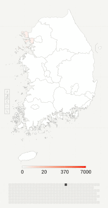
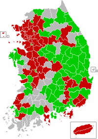
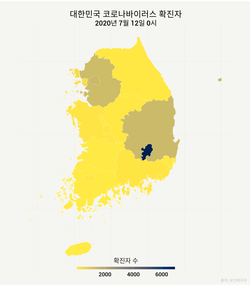

전쟁과 평화 에디터톤이 6월 25일부터 7월 27일까지 진행됩니다.
대한민국의 코로나19 범유행
| 글의 중립성에 대한 이의가 제기되었습니다. (2020년 2월) |
| 이 문서는 위키백과의 편집 지침에 맞춰 다듬어야 합니다. (2020년 2월 22일) |
| 이 문서는 최근의 사건에 대한 것으로, 문서에 많은 편집이 이루어지고 있습니다. |
|  국내 코로나바이러스 확산 양상 | |||||
| 병명 | 코로나바이러스감염증-19 | ||||
|---|---|---|---|---|---|
| 바이러스 종류 | SARS-CoV-2 | ||||
| 발생일 | 2020년 1월 8일 | ||||
| 발원지 | |||||
| 확진환자 | 13,244 | ||||
| 의심환자‡ | 24,012 | ||||
| 완치환자 | 11,970 | ||||
| 사망자 | 288 | ||||
대한민국 위기경보 | |||||
다음은 2020년 1월 8일 코로나바이러스감염증-19 의심환자가 처음으로 확인된 이후에 대한민국에서의 코로나바이러스감염증-19 범유행 현황에 대한 설명이다.
경과
|   | ||||
| 연도 | 날짜 | 누적 확진자 | 누적 사망자 | 누적 격리해제자 |
|---|---|---|---|---|
| 2020년 | 1월 20일 | 1명 (+1) | 0명 | 0명 |
| 1월 24일 | ||||
| 1월 26일 | 2명 (+1) | |||
| 1월 27일 | 3명 (+1) | |||
| 1월 30일 | 4명 (+1) | |||
| 1월 31일 | 6명 (+2) | |||
| 2월 1일 | 11명 (+5) | |||
| 2월 2일 | 12명 (+1) | |||
| 2월 4일 | 15명 (+3) | |||
| 2월 5일 | 16명 (+1) | |||
| 2월 6일 | 19명 (+3) | 1명 (+1) | ||
| 2월 7일 | 23명 (+4) | 2명 (+1) | ||
| 2월 9일 | 24명 (+1) | |||
| 2월 10일 | 27명 (+3) | 3명 (+1) | ||
| 2월 11일 | 4명 (+1) | |||
| 2월 12일 | 28명 (+1) | |||
| 2월 15일 | 7명 (+3) | |||
| 2월 16일 | 9명 (+2) | |||
| 2월 17일 | 29명 (+1) | |||
| 2월 18일 | 30명 (+1) | 10명 (+1) | ||
| 2월 19일 | 31명 (+1) | 12명 (+2) | ||
| 2월 20일 | 51명 (+20) | 1명 (+1) | 16명 (+4) | |
| 2월 21일 | 104명 (+53) | |||
| 2월 22일 | 204명 (+100) | 2명 (+1) | 17명 (+1) | |
| 2월 23일 | 433명 (+229) | 18명 (+1) | ||
| 2월 24일 | 602명 (+169) | 6명 (+4) | ||
| 2월 25일 | 833명 (+231) | 8명 (+2) | 24명 (+6) | |
| 2월 26일 | 977명 (+144) | 12명 (+4) | ||
| 2월 27일 | 1,261명 (+284) | |||
| 2월 28일 | 1,766명 (+505) | 13명 (+1) | 27명 (+3) | |
| 2월 29일 | 2,337명 (+571) | 16명 (+3) | ||
| 3월 1일 | 3,150명 (+813) | 17명 (+1) | 28명 (+1) | |
| 3월 2일 | 4,212명 (+1,062) | 22명 (+5) | 31명 (+3) | |
| 3월 3일 | 4,812명 (+600) | 28명 (+6) | 34명 (+3) | |
| 3월 4일 | 5,328명 (+516) | 32명 (+4) | 41명 (+7) | |
| 3월 5일 | 5,766명 (+438) | 35명 (+3) | 88명 (+47) | |
| 3월 6일 | 6,284명 (+518) | 42명 (+7) | 108명 (+20) | |
| 3월 7일 | 6,767명 (+483) | 44명 (+2) | 118명 (+10) | |
| 3월 8일 | 7,134명 (+367) | 50명 (+6) | 130명 (+12) | |
| 3월 9일 | 7,382명 (+248) | 51명 (+1) | 166명 (+36) | |
| 3월 10일 | 7,513명 (+131) | 54명 (+3) | 247명 (+81) | |
| 3월 11일 | 7,755명 (+242) | 60명 (+6) | 288명 (+41) | |
| 3월 12일 | 7,869명 (+114) | 66명 (+6) | 333명 (+45) | |
| 3월 13일 | 7,979명 (+110) | 67명 (+1) | 510명 (+177) | |
| 3월 14일 | 8,086명 (+107) | 72명 (+5) | 714명 (+204) | |
| 3월 15일 | 8,162명 (+76) | 75명 (+3) | 834명 (+120) | |
| 3월 16일 | 8,236명 (+74) | 1,137명 (+303) | ||
| 3월 17일 | 8,320명 (+84) | 81명 (+6) | 1.401명 (+264) | |
| 3월 18일 | 8,413명 (+93) | 84명 (+3) | 1,540명 (+139) | |
| 3월 19일 | 8,565명 (+152) | 91명 (+7) | 1,947명 (+407) | |
| 3월 20일 | 8,652명 (+87) | 94명 (+3) | 2,233명 (+286) | |
| 3월 21일 | 8,799명 (+147) | 102명 (+8) | 2,612명 (+379) | |
| 3월 22일 | 8,897명 (+98) | 104명 (+2) | 2,909명 (+297) | |
| 3월 23일 | 8,961명 (+64) | 111명 (+7) | 3,166명 (+257) | |
| 3월 24일 | 9,037명 (+76) | 120명 (+9) | 3,507명 (+341) | |
| 3월 25일 | 9,137명 (+100) | 126명 (+6) | 3,730명 (+223) | |
| 3월 26일 | 9,241명 (+104) | 131명 (+5) | 4,144명 (+414) | |
| 3월 27일 | 9,332명 (+91) | 139명 (+8) | 4,528명 (+384) | |
| 3월 28일 | 9,478명 (+146) | 144명 (+5) | 4,811명 (+283) | |
| 3월 29일 | 9,583명 (+105) | 152명 (+8) | 5,033명 (+222) | |
| 3월 30일 | 9,661명 (+78) | 158명 (+6) | 5,228명 (+195) | |
| 3월 31일 | 9,786명 (+125) | 162명 (+4) | 5,408명 (+180) | |
| 4월 1일 | 9,887명 (+101) | 165명 (+3) | 5,567명 (+159) | |
| 4월 2일 | 9,976명 (+89) | 169명 (+4) | 5,828명 (+261) | |
| 4월 3일 | 10,062명 (+86) | 174명 (+5) | 6,021명 (+193) | |
| 4월 4일 | 10,156명 (+94) | 177명 (+3) | 6,325명 (+304) | |
| 4월 5일 | 10,237명 (+81) | 183명 (+6) | 6,463명 (+138) | |
| 4월 6일 | 10,284명 (+47) | 186명 (+3) | 6,598명 (+135) | |
| 4월 7일 | 10,331명 (+47) | 192명 (+6) | 6,694명 (+96) | |
| 4월 8일 | 10,384명 (+53) | 200명 (+8) | 6,776명 (+82) | |
| 4월 9일 | 10,423명 (+39) | 204명 (+4) | 6,973명 (+197) | |
| 4월 10일 | 10,450명 (+27) | 208명 (+4) | 7,117명 (+144) | |
| 4월 11일 | 10,480명 (+30) | 211명 (+3) | 7,243명 (+126) | |
| 4월 12일 | 10,512명 (+32) | 214명 (+3) | 7,368명 (+125) | |
| 4월 13일 | 10,537명 (+25) | 217명 (+3) | 7,447명 (+79) | |
| 4월 14일 | 10,564명 (+27) | 222명 (+5) | 7,534명 (+87) | |
| 4월 15일 | 10,591명 (+27) | 225명 (+3) | 7,616명 (+82) | |
| 4월 16일 | 10,613명 (+22) | 229명 (+4) | 7,757명 (+141) | |
| 4월 17일 | 10,635명 (+22) | 230명 (+1) | 7,829명 (+72) | |
| 4월 18일 | 10,653명 (+18) | 232명 (+2) | 7,937명 (+108) | |
| 4월 19일 | 10,661명 (+8) | 234명 (+2) | 8,042명 (+105) | |
| 4월 20일 | 10,674명 (+13) | 236명 (+2) | 8,114명 (+72) | |
| 4월 21일 | 10,683명 (+9) | 237명 (+1) | 8,213명 (+99) | |
| 4월 22일 | 10,694명 (+11) | 238명 (+1) | 8,277명 (+64) | |
| 4월 23일 | 10,702명 (+8) | 240명 (+2) | 8,411명 (+134) | |
| 4월 24일 | 10,708명 (+6) | 8,501명 (+90) | ||
| 4월 25일 | 10,718명 (+10) | 8,635명 (+134) | ||
| 4월 26일 | 10,728명 (+10) | 242명 (+2) | 8,717명 (+82) | |
| 4월 27일 | 10,738명 (+10) | 243명 (+1) | 8,764명 (+47) | |
| 4월 28일 | 10,752명 (+14) | 244명 (+1) | 8,854명 (+90) | |
| 4월 29일 | 10,761명 (+9) | 246명 (+2) | 8,922명 (+68) | |
| 4월 30일 | 10,765명 (+4) | 247명 (+1) | 9,059명 (+137) | |
| 5월 1일 | 10,774명 (+9) | 248명 (+1) | 9,072명 (+13) | |
| 5월 2일 | 10,780명 (+6) | 250명 (+2) | 9,123명 (+51) | |
| 5월 3일 | 10,793명 (+13) | 9,183명 (+60) | ||
| 5월 4일 | 10,801명 (+8) | 252명 (+2) | 9,217명 (+34) | |
| 5월 5일 | 10,804명 (+3) | 254명 (+2) | 9,283명 (+66) | |
| 5월 6일 | 10,806명 (+2) | 255명 (+1) | 9,333명 (+50) | |
| 5월 7일 | 10,810명 (+4) | 256명 (+1) | 9,419명 (+86) | |
| 5월 8일 | 10,822명 (+12) | 9,484명 (+65) | ||
| 5월 9일 | 10,840명 (+18) | 9,568명 (+84) | ||
| 5월 10일 | 10,874명 (+34) | 9,610명 (+42) | ||
| 5월 11일 | 10,909명 (+35) | 9,632명 (+22) | ||
| 5월 12일 | 10,936명 (+27) | 258명 (+2) | 9,670명 (+38) | |
| 5월 13일 | 10,962명 (+26) | 259명 (+1) | 9,695명 (+25) | |
| 5월 14일 | 10,991명 (+29) | 260명 (+1) | 9,762명 (+67) | |
| 5월 15일 | 11,018명 (+27) | 9,821명 (+59) | ||
| 5월 16일 | 11,037명 (+19) | 262명 (+2) | 9,851명 (+30) | |
| 5월 17일 | 11,050명 (+13) | 9,888명 (+37) | ||
| 5월 18일 | 11,065명 (+15) | 263명 (+1) | 9,904명 (+16) | |
| 5월 19일 | 11,078명 (+13) | 9,938명 (+34) | ||
| 5월 20일 | 11,110명 (+32) | 10,066명 (+128) | ||
| 5월 21일 | 11,122명 (+12) | 264명 (+1) | 10,135명 (+69) | |
| 5월 22일 | 11,142명 (+20) | 10,162명 (+27) | ||
| 5월 23일 | 11,165명 (+23) | 266명 (+2) | 10,194명 (+32) | |
| 5월 24일 | 11,190명 (+25) | 10,213명 (+19) | ||
| 5월 25일 | 11,206명 (+16) | 267명 (+1) | 10,226명 (+13) | |
| 5월 26일 | 11,225명 (+19) | 269명 (+2) | 10,275명 (+49) | |
| 5월 27일 | 11,265명 (+40) | 10,295명 (+20) | ||
| 5월 28일 | 11,344명 (+79) | 10,340명 (+45) | ||
| 5월 29일 | 11,402명 (+58) | 10,363명 (+23) | ||
| 5월 30일 | 11,441명 (+39) | 10,398명 (+35) | ||
| 5월 31일 | 11,468명 (+27) | 270명 (+1) | 10,405명 (+7) | |
| 6월 1일 | 11,503명 (+35) | 271명 (+1) | 10,422명 (+17) | |
| 6월 2일 | 11,541명 (+38) | 272명 (+1) | 10,446명 (+24) | |
| 6월 3일 | 11,590명 (+49) | 273명 (+1) | 10,467명 (+21) | |
| 6월 4일 | 11,629명 (+39) | 10,499명 (+32) | ||
| 6월 5일 | 11,668명 (+39) | 10,506명 (+7) | ||
| 6월 6일 | 11,719명 (+51) | 10,531명 (+25) | ||
| 6월 7일 | 11,776명 (+57) | 10,552명 (+21) | ||
| 6월 8일 | 11,814명 (+38) | 10,563명 (+11) | ||
| 6월 9일 | 11,852명 (+38) | 274명 (+1) | 10,589명 (+26) | |
| 6월 10일 | 11,902명 (+50) | 276명 (+2) | 10,611명 (+22) | |
| 6월 11일 | 11,947명 (+45) | 10,654명 (+43) | ||
| 6월 12일 | 12,002명 (+55) | 277명 (+1) | 10,669명 (+15) | |
| 6월 13일 | 12,051명 (+49) | 10,691명 (+22) | ||
| 6월 14일 | 12,084명 (+33) | 10,718명 (+27) | ||
| 6월 15일 | 12,121명 (+37) | 10,730명 (+12) | ||
| 6월 16일 | 12,155명 (+34) | 278명 (+1) | 10,760명 (+30) | |
| 6월 17일 | 12,198명 (+43) | 279명 (+1) | 10,774명 (+14) | |
| 6월 18일 | 12,257명 (+59) | 280명 (+1) | 10,800명 (+26) | |
| 6월 19일 | 12,306명 (+49) | 10,835명 (+35) | ||
| 6월 20일 | 12,373명 (+67) | 10,856명 (+21) | ||
| 6월 21일 | 12,421명 (+48) | 10,868명 (+12) | ||
| 6월 22일 | 12,438명 (+17) | 10,881명 (+13) | ||
| 6월 23일 | 12,484명 (+46) | 281명 (+1) | 10,908명 (+27) | |
| 6월 24일 | 12,535명 (+51) | 10,930명 (+22) | ||
| 6월 25일 | 12,563명 (+28) | 282명 (+1) | 10,974명 (+44) | |
| 6월 26일 | 12,602명 (+39) | 11,172명 (+198) | ||
| 6월 27일 | 12,653명 (+51) | 11,317명 (+145) | ||
| 6월 28일 | 12,715명 (+62) | 11,364명 (+47) | ||
| 6월 29일 | 12,757명 (+42) | 11,429명 (+65) | ||
| 6월 30일 | 12,799명 (+42) | 11,537명 (+108) | ||
| 7월 1일 | 12,850명 (+51) | 11,613명 (+76) | ||
| 7월 2일 | 12,904명 (+54) | 11,684명 (+71) | ||
| 7월 3일 | 12,967명 (+63) | 11,759명 (+75) | ||
| 7월 4일 | 13,030명 (+63) | 283명 (+1) | 11,811명 (+52) | |
| 7월 5일 | 13,089명 (+59) | 11,832명 (+21) | ||
| 7월 6일 | 13,137명 (+48) | 284명 (+1) | 11,848명 (+16) | |
| 7월 7일 | 13,181명 (+44) | 285명 (+1) | 11,914명 (+66) | |
| 7월 8일 | 13,243명 (+62) | 11,970명 (+56) | ||
| 7월 9일 | 13,293명 (+50) | 287명 (+2) | 12,019명 (+49) | |
| 7월 10일 | 13,338명 (+45) | 288명 (+1) | 12,065명 (+46) | |
| 7월 11일 | 13,373명 (+35) | 12,144명 (+79) | ||
| 7월 12일 | 13,417명 (+44) | 289명 (+1) | 12,178명 (+34) | |
| 2020년 7월 12일 현재 | ||||
1월
2020년 1월 8일, 코로나바이러스감염증-19와 유사한 증상을 보이는 의심환자가 대한민국 내에서 처음으로 확인됐다. 이 의심환자는 36세 중국인 여성으로 작년 12월 13일부터 17일까지 우한시를 방문한 이력이 있었으며, 전날부터 관련 증세로 병원을 방문한 도중 폐렴 소견이 확인되어 질병관리본부에 신고됐다.[1] 사흘 뒤인 1월 11일, 질병관리본부는 바이러스 검사 결과 우한시에서 발생한 신종 코로나바이러스와는 관계없다는 결론을 내렸다.[2]
1월 20일, 35세 중국인 여성이 신종 코로나바이러스 감염자로 확인되면서, 대한민국 내 첫 번째 감염자가 되었다. 이 환자는 우한시 거주자로, 지난 18일 관련 증상이 있어 현지 병원에서 감기 판정을 받았다. 이후 19일 인천국제공항 입국장에서 고열 등의 증상을 보여 격리조치 및 검사를 받았으며, 확진판정 후 국가지정 격리병상인 인천의료원으로 이송됐다.[3] 질병관리본부는 "국내 확진환자가 나옴에 따라 감염병 위기경보 수준을 '관심'에서 '주의' 단계로 상향 조정하고, 중앙방역대책본부와 지자체 대책반을 가동해 지역사회 감시와 대응 강화"에 나서기로 했다.[3][4] 이후 23일까지 유증상자 21명이 신고되었으나, 전원 음성 판정을 받아 격리 해제조치가 이뤄졌다.[5]
1월 22일, 문재인 대통령은 신종 코로나바이러스에 대한 철저한 검역과 예방 조치를 지시하면서 "설 연휴 국내외 이동이 많은 시기인 만큼 특별 대책이 필요하다"며, 공항과 항만 검역 외에도 지역사회에서의 대응체계를 갖추도록 당부했다.[6] 1월 23일, 대한민국 외교부는 중국 후베이성 우한시에 여행경보 2단계인 '여행자제'를, 우한을 제외한 후베이성 전역에 1단계인 '여행유의'를 발령했다.[7] 같은 날 질병관리본부는 교민 보호 활동과 현지 상황 파악을 위해 역학조사관을 중국 현지 공관에 파견키로 했다.[5] 행정안전부는 전국민을 대상으로 신종 코로나바이러스 감염증 예방 관련 안전안내문자를 처음으로 발송하였다.[8] 대한민국 국적 항공사 대한항공 역시 우한시 취항 노선 4편을 취소한다고 밝혔다.[9]
1월 24일, 대한민국 내 두 번째 신종 코로나바이러스 확진자가 확인됐다.[10] 이 환자는 중국 우한시에서 근무하던 55세 한국인 남성으로 지난 10일부터 시작된 목감기 증상으로 현지 의료기관을 방문하였고, 우한에서 상하이를 경유하여 22일 저녁 김포공항을 통해 귀국하던 중 검역 과정에서 발열과 인후통이 확인돼 능동감시 판정을 받았다. 이튿날 보건소 선별진료 검사 결과 확진자로 판명됐다.[10] 질병관리본부는 심층 역학조사 결과 두번째 환자와 접촉한 사람은 총 69명이며, 증상 유무와 관계없이 관할 보건소를 통해 능동감시를 진행한다고 밝혔다. 이 환자는 국립중앙의료원에서 입원 치료중에 있는 것으로 알려졌다.[11] 이날 의심증상 보고자는 총 4명으로 모두 음성 판정을 받았다.[10]
1월 25일, 대한민국 외교부는 신종 코로나바이러스의 발원지인 우한시를 비롯한 후베이성 전역에 대한 여행경보를 3단계 (철수권고)로 상향조정하면서, 후베이성에 체류중인 국민은 긴급용무가 아닌 이상 철수를 권고하고, 여행 예정자는 취소 내지는 연기를 당부했다.[12][13][14] 같은 날 질병관리본부는 공항 검역단계에서의 감시 대상 오염지역을 우한시에서 중국 전역으로 확대하기로 했다고 밝혔다. 이는 중국 측이 우한시를 긴급 봉쇄하면서 직항 항공편이 사라진 동시에 바이러스가 다른 지역에서 유입될 가능성이 커졌다는 판단에 따라서다.[15] 이와 더불어 현재까지 발생한 감염자 두 명의 건강상태는 '안정적'이라고 밝혔다.[16]
1월 26일, 질병관리본부는 대한민국 내 세 번째 감염 확진자가 확인됐다고 밝혔다.[17][18] 세 번째 환자는 우한시에서 거주하다가 지난 20일 입국한 54세 한국인 남성으로, 입국 당시 무증상이었다가 22일 첫 증세를 느껴 해열제를 복용한 뒤, 25일부터 기침 가래 증상이 발생해 질병관리본부 콜센터로 자진신고, 국가지정 입원치료병상인 명지병원에 격리됐다. 이튿날 검사 결과 양성 반응이 나와 확진자로 판명됐다. [17][19] 이 과정에서 해당 환자가 우한시를 방문했으나 입국 당시 무증상이었던 이유로 능동감시 대상자로 지정되지 않은 점이 지적되면서, 질병관리본부가 능동감시 범위와 방역기준을 재설정하기로 했다.[20] 이에 따라 검역 격리대상자는 '중국 후베이성 방문자 중 발열 또는 호흡기 증상, 어느 하나라도 확인된 사람'으로 확대 변경되었다.[21] 이날 질병관리본부가 밝힌 조사대상 유증상자는 48명이며, 이 중 47명은 음성 결과로 격리해제됐다고 밝혔다.[17][19] 한편으로 같은 날 문재인 대통령은 질병관리본부장과의 통화에서 신종 코로나바이러스 대응에 만전을 기할 것을 지시하고, 감염증 확산에 대해 "정부를 믿고 과도한 불안을 갖지 마실 것을 당부드린다"고 말했다.[22]
1월 29일, 중앙사고수습본부는 중국 우한시에서 전세기로 귀국하는 교민을 위한 임시생활시설로 충청남도 아산시 경찰인재개발원과 충청북도 진천군 국가공무원 인재개발원을 선정했다고 밝혔다. 또한 귀국 교민 가운데 무증상자만 우선 이송하기로 했다.[23] 우한시 교민 중 귀국을 희망한 사람은 약 720명으로, 1월 30일과 1월 31일 이틀에 걸쳐 전세기 4편을 동원해 김포공항으로 이송한다. 귀국시 전세기 내에서의 접촉을 최소화하기 위해 좌석이 엇갈려 배치되며, 공항에서 증상 검사를 거쳐 무증상자에 한하여 14일간 임시생활시설에서 생활하도록 했다.[23] 이날 귀국 교민들의 격리시설이 아산시로 결정되자 일부 지역 주민들이 경찰인재개발원 진입로를 막고 농성을 벌이며 반발의 뜻을 표했다.[24] 한편 같은 날 대한민국 경찰청은 우한 코로나바이러스 의심환자가 격리를 거부하면 경찰에 체포되어 강제 격리시키겠다고 밝혔다.[25]
2월
2월 16일 아산 경찰인재개발원에서 우한 교민이 퇴소했다.[26] 2월 17일 31번째 환자 발생 이후 2월 19일부터 대구· 경북 지역에 다수의 확진 환자가 발생했다. 대부분이 신천지 대구교회 예배당에서 발생한 관계로 높은 전파력이 예상되어, 정부는 즉시 범정부 특별 대책 지원단을 현지에 파견했다.[27]
진단 검사의 수요가 증가하여 선별 진료소 8곳이 추가(14개 → 22개)되었고, 공중 보건 의사 24명이 2월 20일 교육 완료 후 배치되었다. 또한 신천지 교단의 협력을 얻어 교인들을 분리하여 검사를 받도록 계획했다.[27]
중앙사고수습본부는 코로나 19 환자를 치료, 진료해 절연된 의료기관 등에 대한 손실 보상을 논의하기 위해 손실 보상 심의위원회를 2월 17일 구성했다. 위원회는 감염 예방법에 따라 손실 보상의 구체적인 기준 등의 손실 보상에 관한 사항을 심의 · 의결할 예정이다. 위원회는 감염의 예방과 관리, 손실 보상 등 관련 분야 전문가와 이해 관계자, 정부 등의 위원으로 구성되었다.[27]
2월 20일 신천지 대구 교회에서 38명의 대규모 감염자가 나오면서, 잠잠해지던 코로나 바이러스 사태는 새로운 국면으로 전환되어, 추가적인 지역 사회 감염에 대한 우려가 발생하였다.[28]
2월 21일 소방청은 시도 본부장 긴급영상회의를 개최하고 소방동원령 1호[29]를 발령하였다. 부산, 대전, 울산, 충북, 강원, 경남 소방의 구급차 22대와 구급대원 44명이 동원되었다.[30]
2월 22일 보건당국은 국내 두 번째 사망자가 코로나19로 인한 폐렴으로 사망한 것으로 결론내렸다.[31]
2월 22일 부산에서 코로나19 확진 판정을 받은 19세의 남성은 아산 경찰인재개발원에 머물던 우한 교민의 아들이다.[32]
2월 23일 대구에서 확진자가 급격히 늘어나 단숨에 602명을 기록하였고 대부분 신천지 대구교회에서 전파된 것으로 드러났다. 이에 따라 학원은 휴강을 연기하고 유치원/초중고 개학도 3월 9일로 미루어졌다. 위기 단계는 경계에서 심각으로 격상되었다.
2월 24일에는 추가 확진자 161명이 발생하여 누적 확진자는 833명으로 늘었다. 확진자 수는 계속 증가하여 25일에는 977명으로, 26일에는 1261명으로, 27일에는 1766명으로 늘었다. 이어 28일에는 추가 확진자 571명이 확인되어 2337명으로 늘었으며, 29일에는 추가 확진자가 813명이 늘어나 확진자 수 3150명으로 매우 심각한 상황이 되었다.
3월
3월 1일에는 확진자가 추가로 586명이 늘어나 3736명이 되었다.
3월 2일에는 추가 확진자가 599명이 늘어나 4335명이 되어 위기를 보였다. 초/중/고 개학이 3월 23일로 연기되었다.
3월 3일 0시 기준 확진자가 4,812명으로 477명이 추가 확진되었다. 사망자는 2명이 늘어 28명이 되었다. 이 날부터 코로나19에 대한 현황은 0시부터 공개된다.
3월 4일 0시 기준 확진자가 5,766명이 되었다. 사망자는 전날보다 7명이 늘어난 35명이 되었다.
3월 13일, 지난 1월 20일 첫 코로나19 환자 발생 이후, 대구발 신천지 교회 폭증세로 악화 일로를 걷던 코로나19 사태가 두달만에 "골든 크로스" 를 그리면서, 최초로 확진자가 3월 12일보다 68명이 감소하였다. 즉 완치 판정을 받은 177명이 격리 해제를 되었고, 신규 확진자 숫자는 110명이 발생한 것이다.[33]
3월 14일 0시 기준 확진자가 8,086명이 되었다. 사망자는 5명 늘어 72명이 되었다.
3월 15일 0시 기준 확진자가 8,162명이 되었다. 사망자는 3명 늘어 75명이 되었고, 골든 크로스 이틀만에, 완치 환자 수가 확진자 수를 추월하였다.
3월 17일 0시 기준 확진자가 84명 늘어 8,320명이 되고, 완치자는 264명이 늘어 1,401명이 되었다. 유치원,초,중,고 개학이 4월 6일로 2주 더 연기되었다.
3월 18일 대구에서 폐렴 증상을 보이다 사망한 고등학생은 코로나19로 사망한 것으로 검사 결과 알려졌으나 질병관리본부가 재검사한 결과 음성으로 밝혀졌다. 이와같은 상황이 발생한 이유는 검사를 진행한 영남대병원의 검사 오류로 밝혀졌다.[34]
4월
4월 5일, 신천지 사태 이후 처음으로 신규 확진자가 50명 이하로 떨어졌다.
5월
5월 초, 이태원 클럽 코로나19 집단감염이 발생하여, 8일 15명의 확진자가 발생하였다.[35] 9일 서울시는 모든 유흥시설에 대하여 집합금지 명령을 발동하였다.[36] 11일 교육부는 전국 유치원과 초·중·고의 등교 일정을 일주일 연기하기로 결정했다.[37]
5월 12일 이태원 집단 감염으로 발생한 확진자가 102명으로 조사되었다. 이중 이태원 유흥업소를 방문한 확진자는 73명이었으며, 2차 감염자는 29명이었다.[38]
6월
| 이 문단은 비어 있습니다. 내용을 추가해 주세요. |
7월
| 이 문단은 비어 있습니다. 내용을 추가해 주세요. |
집단 감염
| 이 문단은 위키백과의 편집 지침에 맞춰 다듬어야 합니다. (2020년 3월 15일) |
| 이 문단은 아직 미완성입니다. 부족한 부분은 이 문단에 없는 집단감염 사례도 많은 것이며, 여러분의 지식으로 알차게 문서를 완성해 갑시다. (2020년 5월 22일) |
| 펼치기주요 집단 감염 사례 |
|---|
대구 신천지 교회
신천지예수교 증거장막성전의 신도인 31번째 확진자가 예배를 하러 간 장소, 코로나 바이러스의 새로운 진앙지로 지적된 대구의 신천지예수교회 다대오지성전에서 38명 이상이 무더기로 확진 판정을 받았다.[39] 그리고 20일 대구에서 50명의 환자가 더 나와 총 확진자 수는 102명으로 증가하였다. 대한민국에서 53명의 코로나바이러스 감염자가 발생하였으며 이 중 51명이 대구에서 감염된 것으로 확인되었다. 질병관리본부는 20명의 추가 의료진을 대구로 급파하기로 하였다.[40]
31번 환자가 확진된 이후 신천지 교회를 통해 코로나 바이러스가 감염된 신자들이 늘어나자, 신천지 섭외부(교인이탈방지부서)가 "그날 예배에 안 갔다" 또는 "이제 신천지 교회에 가지 않는다"라고 대응하도록 신자들을 대상으로 단속 공지를 한 것이 발각되었다.[41][42] 2020년 2월 20일 기준으로, 대한민국에서 확진된 코로나 환자 105명 중 45%가 신천지 교회에서 발생하였다. 교회에서의 감염자수를 싱가포르와 비교하면, 싱가포르의 경우 전체 감염자 중 33%인 28명의 감염자가 교회에서 감염되었다.[43]
신천지 교회에 참석한 코로나 바이러스 감염자가 다른 사람과의 접촉을 통하여 최소한 23명 이상을 바이러스에 추가로 감염시킨 것으로 파악되자, 질병관리본부는 코로나19의 슈퍼 전파자로 파악되는 바이러스 감염자와 접촉한 166명 모두에게 코로나 바이러스 감염 여부를 검사하는 등의 조치를 취하고 있다.[44][45]
신천지 교회 내부에서의 집단 감염으로, 2020년 2월 21일 기준으로 대한민국 감염자 204명 중 3분의 2 이상에 해당하는 70%인 144명이 신천지 교회를 통해서 감염된 것으로 확진되었다. 집단감염의 발생 원인은 밀폐된 공간에 많은 사람들이 참석하는 예배 방식 때문이라고 분석되었다.[46][47][48]
신천지 교회 신자들을 중심으로 코로나 바이러스가 확산되는 상황에서, 신천지 대구교회를 방문하였던 서울특별시 서초구 방배3동 거주자가 검진 결과 2020년 2월 21일에 코로나 바이러스 확진자로 확인되자, 서초구는 신천지 시설을 전수 조사하고 방역을 통해 지역 사회 감염을 차단하고자 노력하였다.[49]
신천지 대구교회 신도 중 390명이 연락이 불가능한 등 신천지 신자에 의한 추가 감염 예방을 위한 보건 당국의 방역 활동에 어려움이 있는 상황에서, 신천지 교회에서 주는 자료 이외에 신천기 내부 데이터를 확보해야 한다는 필요성이 부각되었다. 신천지를 다녔던 신도들의 증언에 의하면, 신천지는 매일 전국적으로 신도 출석 현황이 자동으로 지문 인식 또는 휴대폰 QR 코드로 집계되고 있다. 또한 겉으로 드러난 지파별 본부·지교회 이외에, 거리 포교와 무료 성경 공부, 그리고 개신교회에 잠입해서 신도를 빼내가는 "추수꾼"들의 활동까지도 12지파별 중심 서버에 취합되고 있다고 한다. 이처럼 매일 자동으로 수합되는 내부 전산 자료를 확보하면, 신천지 신도가 소속 교회가 아닌 대구 지역 등 다른 지역의 신천지 교회 등을 출석하였던 상황까지도 동선을 파악할 수 있어, 보건당국이 추가 감염을 막고 빠르게 대처할 수 있다고 전 신도들은 제안하였다.[50]
2020년 2월 20일 신천지 교회에서 39명 이상의 대규모 감염자가 확진된 이후에, 2월 21일에는 서울특별시뿐만 아니라, 경기도 김포시, 파주시, 고양시 등에도 추가 환자가 발생하였다. 2월 21일 기준으로 대한민국 내 확진자는 156명으로 증가하였다.[51] 광주광역시 3명, 경북 포항 1명, 경남 합천 2명과 진주 2명 등이 신천지 대구교회 예배에 참석했을 때 바이러스에 감염되었다는 사실이 드러나자, 타 지역 교인들 중 신천지 대구교회의 참석 현황을 파악하여 전수 조사해야 한다는 요구가 일었다.[52]
신천지 총회장 이만희의 형의 장례식이 경상북도 청도군 화양읍 청도대남병원에서 1월 31일부터 2월 2일까지 3일장으로 열렸으며, 이때 신천지 교인들 47여 명이 참석하였던 것 등이 청도 대남병원에서 4명의 사망자를 포함하여 112명의 집단 발병이 일어난 원인으로 주목되고 있다. 이만희 총회장의 형은 청도대남병원에 입원한 후 하루이틀 만인 1월 31일에 사망하였다. 이만희 총회장은 1월 31일과 2월 1일 이틀 동안 장례식장을 방문하였으며, 31번 확진자는 청도 지역의 유명한 찜질방에는 방문하였지만 장례식장에는 가지 않았던 것이 확인되었다.[53][54] 청도대남병원은 대한민국 내 첫 코로나19의 사망자가 발생한 곳이며, 2020년 2월 23일에는 여섯 번째 사망자가 추가로 발생한 곳이기도 하다.[55] 2월 22일 기준으로 청도대남병원에서 발병한 사람의 수는 107명에 이른다.[56]
2월 21일, 신천지 총회장 이만희는 코로나바이러스감염증-19 범유행을 ‘마귀의 짓’으로 규정하면서, 방역당국의 정책에 협조하여 전도와 교육은 통신으로 하며, 당분간 신천지 모임을 피하자고 신도들에게 공지하였다.[57][58] 그러나 이와 달리, 신천지 대구·경북 예배회에서 긴급 공지라는 제목으로, 신천지 자체 통신망을 통해서, "신천지 교회 참석후 아무 전화도 받지 말고 집에 있으세요"라고 요청했다는 사실이 알려지면서, 추가 전염병의 확산을 막으려는 보건 당국의 노력에 어려움을 더했다.[59][60]
2월 23일, 신천지 교회의 대구 지역 신천지 교인 9334명 가운데 유증상자는 1248명으로 파악되었다. 그런데 교인들 670명은 행방을 찾을 수 없고, 연락두절되어 대구지역 경찰서의 형사 및 수사 인력 600명이 투입되어 거주지를 방문하는 등 위치를 파악하여 추가 코로나 바이러스 감염 및 전염을 예방하기 위해서, 보건당국과 긴밀히 협조했다.[61] 3월 12일, 신천지 교인들의 출입 동선 파악 및 교인 명단 시설확보를 위해 경찰을 동원하여 행정조사를 하였다.[62]
2월 24일, 대구 서구보건소에서 감염 예방 업무를 총괄하는 감염예방의학팀장이 신천지 신도이며 코로나19에 감염된 것으로 밝혀져, 같이 근무하는 대구 보건소 직원들 50명이 자가격리 조치 후 검체를 검사 받았다.[63] 이로 인하여 보건소의 업무가 중단되다시피 하자, 시민들은 해당 공무원의 행태를 비판하였다.[64] 3월 1일까지 해당 공무원으로 인하여 발생한 추가 확진자는 4명이다.[65]
이낙연 코로나19재난안전대책위원회 위원장은 3월 2일, 신천지 소유 시설을 신천지 교회에 소속된 무증상 경증 환자들의 생활치료센터로 제공할 것을 신천지에 공식적으로 요청하였다. 이낙연 위원장은 의료 지원은 정부가 제공하고 병원 치료가 필요한 환자들은 신속히 병원으로 옮겨서 입원 치료를 받도록 할 것임을 밝혔다. 또한 야당의 지도자가 신천지를 비호하는 태도가 철저한 방역에 나쁜 영향을 주고, 국민에게 우려를 끼칠 수 있다고 하면서, 야당에 협조를 요청하였다.[66] 코로나19 확진자 폭증으로 병상이 부족해지자, 이를 해결하기 위해서 정부는 치료체계를 무증상 경증 확진환자들은 생활치료센터에서 받고, 중증환자는 병원에서 집중 치료를 받도록 단계를 구분하였다고 위원장은 설명하였다.[67]
2월 21일, 문재인 대통령은 코로나19 대응 긴급 현안보고 자리에서, 당일까지 총 58명의 바이러스 확진자가 나와 핵심 전파지역으로 파악된 신천지 대구교회와 그 신도들이 방문한 청도대남병원 장례식장에서 예배와 장례식에 참석한 사람들을 철저히 조사하라고 지시하였다. 정세균 총리는 대구·경북을 '감염병 특별관리지역'으로 지정해 방역 대책을 집중하는 방안을 보고하였으며, 신천지 대구교회 신도 명단을 확보해 신도들을 자가격리한 상태에서 모두 진단검사를 실시하겠다는 계획을 발표하였다.[68]
3월 3일, 신천지가 정부 방역당국에 적극적으로 협조해야 함에도 명단을 늑장·허위 제출하고, 위장 시설을 통해서 포교나 모임을 지속해온 것 등을 근거로 하여, 서울특별시가 신천지 사단법인의 취소 절차에 들어갔다. 종교의 자유도 공익의 한계에서 존재하는 것인데, 신천지 교회가 공익을 심각하게 해하는 행위를 하였던 것이 이유가 되었다.[69] 3월 13일, 서울특별시는 신천지의 법인 설립허가 취소에 관련하여 청문 절차를 진행하였는데, 신천지 측은 처음에는 이만희 총회장의 대리인이 오기로 하였었지만, 바쁘다는 이유로 결국은 불참했다. 서울특별시는 신천지에 다시 소명 자료를 요청하였으며, 서류가 제출되면 이를 검토하여 최종 취소 절차를 3월 안에 종료한다고 밝혔다.[70] 2020년 3월 26일 신천지의 사단법인 설립 허가가 취소되었다. 박원순 서울특별시장은 기자회견을 갖고, 법령의 허가 조건을 위반하고 방역 활동을 방해하는 등 공익을 현저히 해한 신천지예수교 증거장막성전('새하늘 새땅 증거장막성전 예수교선교회'로 등록)의 사단법인 설립 허가를 취소한다고 밝혔다. 이와 함께 관련 법인인 하늘문화세계평화광복(HWPL)에 법인 취소를 위한 법적 절차에 돌입했다고 밝혔다.[71][72][73]
신천지는 2019년 3월 14일에는 2만 명이 잠실 체육관에서 창립 기념 행사를 대규모로 개최하였으나, 코로나19 범유행이 온 2020년에는 신천지 강제 해산을 요구하는 국민청원이 120만 명을 돌파하는 등 여론이 악화되자, 창립 36주년을 맞이하여 계획된 대규모 행사를 취소하였다.[74]
3월 13일, 대구광역시에서는 코로나바이러스 방역에 필요한 자료 확보와 신천지 교회를 통한 추가 지역 사회 감염을 막기 위하여 행정조사를 시행하였다. 해당 행정조사를 통하여 신천지교회의 신도명단 및 재산목록 등을 확보하였으며, 자료 양이 방대하여 확보한 자료들의 내용 분석에는 시간이 소요될 예정이다. 이 행정조사에는 역학조사반 및 대구지역 경찰 수사관 등 199명이 투입되었으며, 10시간 이상 소요되었다.[75]
구로구 콜센터
| 이 문단은 비어 있습니다. 내용을 추가해 주세요. |
이태원 클럽
| 이 문단은 위키백과의 편집 지침에 맞춰 다듬어야 합니다. (2020년 5월 24일) |
대응
2020년 5월 9일, 정세균 국무총리는 유흥업소의 특성상 출입자를 찾기가 힘들 수 있다면서, "방대본과 지자체는 모든 수단을 동원해 최단 시간 내 이분들을 찾아내고 진단검사를 실시해달라"고 말했다.
5월 9일, 박원순 서울시장은 오후 2시 시청에서 긴급 브리핑을 열고 "지금 즉시 클럽, 감성주점, 콜라텍, 룸살롱 등 모든 유흥시설에 대해 집합금지 명령을 발령한다"며 "이 순간부터 해당시설은 영업을 중지해야 하고, 위반 시 엄중한 처벌을 받을 것"이라고 말했다. 이어 "이태원 클럽 관련 전체 확진자 수는 서울 27명, 경기 7명, 인천 5명, 부산 1명 등 40명"이라며 "앞으로 추가 확진자가 더 발생할 것"이라고 우려했다.[76]
이태원 클럽에서 작성한 방문자들의 명단 1,946명 중 637명만 통화가 연결되었고, 1,309명이 연락이 안되는 등 집단감염으로 확산될 조짐을 보이고 있다.
성남 127번 확진자는 26세 남자로 성남시 의료원 마취과 간호사이며, 용인 66번 확진자가 갔던 이태원 클럽 등 5곳을 다녔다. 5월 9일 성남 127번 확진자의 친형인 29세 남성이 확진자로 판정되었고, 몇시간 뒤에 성남 127번 확진자의 어머니인 58세 여성이 확진자로 판정되었다.
5월 9일, 이태원을 관할하는 용산구는 클럽·주점 방문자 전수조사 기간을 기존 지난 1일과 2일 사이에서 지난달 30일부터 지난 5일로 늘리고 대상 업소를 기존 '킹', '퀸', '트렁크' 3곳에 '소호'와 '힘'을 추가해 5곳으로 확대했다고 밝혔다. 현재 구가 파악한 조사 대상자는 총 7222명에 달한다. 박원순 서울시장은 이날 오후 긴급 브리핑에서 출입자 명단의 1946명을 파악했다고 밝혔으며, 용산구는 추가로 5276명의 명단을 확보했다. 또한 국방부에서는 이태원 일대의 클럽을 방문한 사실을 자진신고하면 징계 처리하지 않겠다고 발표했다.
5월 10일 오후 10시 기준, 이태원 클럽 방문자 7222명 명단에서 중복을 제외한 총 5517명의 명단을 서울시가 확보해, 외출자제 및 코로나19 진단을 안내했다.
익명검사제 도입
5월 11일, 서울특별시에서는 보다 빠르게 확진자를 찾아내기 익명검사제를 도입하였다. 익명검사제는 이 집단 감염으로 클럽에 방문한 사람 중 연락이 두절된 경우가 매우 많아, 서울특별시에서 도입한 코로나19 익명 검사 제도이다. 이 제도는 검사 진행시, 성명란을 비워두고 검사하여 보건소별 번호를 부여하는 방식이다.서울특별시와 전라북도에서만 시행하고있다.
5월 12일, 정부에서는 익명검사제를 전국적으로 확대하는 것을 검토한다고 밝혔다.[77]
등교 개학 연기
5월 11일, 이태원 클럽 집단 감염으로 인해, 교육부에서는 등교개학 추가 연기를 결정하였다. 모든 일정이 한 주간 미루어 졌으며, 5월 20일부터 6월 8일까지 순차적으로 등교할 예정이다.
5월 20일, 고등학교 3학년생부터 순차적으로 등교를 시작하였다.
청소년 다중이용시설 집합금지
5월 21일, 인천광역시에서는 동전노래방에 방문한 고등학생이 확진되면서 청소년이 이용하는 다중이용시설에 대한 우려가 커졌다. 이에 인천광역시에서는 21일부터 6월 3일까지 2주간 동전노래방 178곳에 대해 집합금지 행정명령을 발령했다고 밝혔다. 또한 노래방 2362곳에 대해서는 미성년자에 대해서만 집합금지 행정명령을 발령했다.[78] 이에 대해 정부는 이 조치를 전국으로 확대할 것인지를 검토하고 있다고 밝혔다.[79]
통계
지역별 현황
| 지역 | 접기7.12(일) 0시 기준 | |||
|---|---|---|---|---|
| 확진자 = 격리중 + 격리해제 + 사망자 | ||||
| 확진자 | 격리중 | 격리해제 | 사망자 | |
| 서울 | 1416 | 198 | 1209 | 9 |
| 부산 | 156 | 5 | 148 | 3 |
| 대구 | 6926 | 25 | 6712 | 189 |
| 인천 | 360 | 28 | 330 | 2 |
| 광주 | 161 | 118 | 43 | 0 |
| 대전 | 159 | 72 | 85 | 2 |
| 울산 | 55 | 1 | 53 | 1 |
| 세종 | 50 | 0 | 50 | 0 |
| 경기 | 1358 | 229 | 1103 | 26 |
| 강원 | 67 | 7 | 57 | 3 |
| 충북 | 68 | 5 | 63 | 0 |
| 충남 | 181 | 22 | 159 | 0 |
| 전북 | 36 | 14 | 22 | 0 |
| 전남 | 32 | 13 | 19 | 0 |
| 경북 | 1393 | 6 | 1333 | 54 |
| 경남 | 146 | 13 | 133 | 0 |
| 제주 | 20 | 2 | 18 | 0 |
| 검역 | 833 | 192 | 641 | 0 |
| 합계 | 13417 | 950 | 12178 | 289 |
출처 : [80]
| 펼치기 완치자 정보 ( 7월 12일 (일) 09시 기준, 12178명 ) |
|---|
| 펼치기 사망자 정보 ( 7월 12일 (일) 09시 기준, 289명 ) |
|---|
성별 및 연령별 현황
| 구분 | 7.12(일) 0시 기준 | 치명률(%) | ||||
|---|---|---|---|---|---|---|
| 확진자 | 비율(%) | 사망자 | 비율(%) | |||
| 성별 | 남성 | 5856 | 43.65 | 153 | 52.94 | 2.61 |
| 여성 | 7561 | 56.35 | 136 | 47.06 | 1.8 | |
| 연령별 | 0-9 | 216 | 1.61 | 0 | 0.0 | - |
| 10-19 | 746 | 5.56 | 0 | 0.0 | - | |
| 20-29 | 3467 | 25.84 | 0 | 0.0 | - | |
| 30-39 | 1612 | 12.01 | 2 | 0.69 | 0.12 | |
| 40-49 | 1761 | 13.13 | 3 | 1.04 | 0.17 | |
| 50-59 | 2392 | 17.83 | 15 | 5.19 | 0.63 | |
| 60-69 | 1753 | 13.07 | 41 | 14.19 | 2.34 | |
| 70-79 | 895 | 6.67 | 84 | 29.07 | 9.39 | |
| 80 이상 | 575 | 4.29 | 144 | 49.83 | 25.04 | |
| 합계 | 13417 | 100 | 289 | 100 | 2.15 | |
출처 : [80]
대응
_01.jpg)
대한의사협회는 코로나바이러스의 추가 감염 및 확산을 방지하기 위해서는 정부 차원에서 현재 중국에서 대한민국으로 입국 예정인 7만 명의 중국인 학생들에 대해 당분간 입국금지 조치를 하도록 하여 적극적인 예방 조치를 취할 것을 대한민국 정부에 권고하였다. 특히 바이러스 감염과 확산을 막는 것에 대해서 대학교의 자체적인 노력은 한계가 있고, 만약 대한민국으로 입국하게 한 후에 기숙사에서 일정 기간 동안 중국 학생들이 외부로 나가지 못하도록 하는 조치는 비현실적이며, 중국 학생들이 결국 외부로 나가서 활동하는 것을 막을 수 없음을 예를 들었다. 대한의사협회는 7만 명 이상의 대규모의 중국 학생들이 중국에서 아직 출국하기 전에, 대한민국으로 입국하는 것을 정부 차원에서 당분간 금지해야 한다고 강조하였다.[91]
다른 한편에서는 코로나바이러스로 인해 세계적인 경제 여파가 발생하고 있어, 대한민국 국가 경제와 지역 경제를 지켜야 한다는 측면에서 정부의 시장 개입이 필요하다고 본다. 홍승제 전 한국투자공사 부사장은 코로나바이러스의 여파와 국내외 경제 상황에 대한 분석 의견을 피력하면서, 특히 중국 경제가 이번 바이러스로 인해서 어려워짐에 따라 대한민국 국내 경제 역시도 영향을 받게 되는 것, 또 기존에는 바이러스 유행을 단기적인 쇼크로 예상하였지만 현재는 장기화될 조짐이 있어 국내 경제에 장기간의 타격을 주고 경기가 서서히 올라갈 것으로 보이는 것 등을 지적하였다. 그는 코로나바이러스로 인한 국가와 지역 경제에 주는 타격을 흡수할 경기 부양책을 포함한 여러 가지 대응책들에 대해 언급하였다.[92]
2020년 2월 현재 코로나바이러스의 확산을 방지하기 위해서 중국과 밀접한 조선민주주의인민공화국과 러시아 등의 동맹 국가들 또한 선제적으로 중국인이 자국으로 입국하는 것을 금지하였다. 중국 전역에서 입국을 금지하는 국가는 중국의 우방국가인 베트남을 포함해 싱가포르, 인도네시아, 대만, 필리핀, 이스라엘, 뉴질랜드, 우간다, 미국, 호주 등 총 41개 국가가 중국 전역에서 입국하는 것을 금지하였다.[93]
서울시장은 서울 동작구, 서대문구, 노원구, 강서구에 위치한 신천지 교회 4곳에 대하여 방역 소독을 실시하며 사회복지시설 3천467곳을 임시 휴관하고 감염병 예방 및 관리에 대한 법률 47조의 '출입금지·이동제한'에 근거한 법규를 통하여 서울 지역에 있는 4곳의 신천지 교회를 2020년 2월 21일부터 폐쇄한다.[94]
위기 경보 심각 단계 격상
2월 23일, 정부서울청사에서 열린 코로나19 범정부대책회의에서 문재인 대통령은 정부와 지자체 방역 당국 및 의료진을 포함한 전국민이 총력대응하기 위하여, 기존 위기경보 단계를 현재의 '경계' 단계에서 최상위 단계인 '심각' 단계로 격상한다고 발표하였다.[95] KBS 뉴스의 분석에 따르면, 2월 22일 토요일까지만 해도 대한민국의 보건당국은 감염병 위기 경보는 '경계' 단계로 유지한다고 하였다. 이유는 전국적인 유행 상황이 아니었고, 전파 경로 파악이 가능하였다는 것이다. 그러나 대구, 경북 지역에서 바이러스가 빠르게 확산세를 보이고 있고, 바이러스 감염 경로 추적이 어려운 환자가 잇따라 발생하여, 대한민국 정부는 선제적으로 기존의 경계 단계에서, 최상위 수준인 "심각" 경보로 격상하여 총력 대응하기로 하였다. 즉 바이러스의 확산이 대구 신천지 교회와 경북 대남병원이라는 제한된 지역에서 이루어지고 있지만, 전파 속도가 빨라 전국적 확산으로 이어질 수도 있어 이를 예방하고자 선제적으로 대응한 것이다.[96]
교육
학교 개학 연기
2월 23일, 전국 유치원, 초·중·고 개학의 1주일 연기가 결정되었다. 이로 인해 2020년 3월 2일 예정이었던 개학이 2020년 3월 9일으로 연기되었다.[97] 이에 따라 전국의 대학교도 개강이 1~2주 연기되었으며 4주 연기도 검토했다.[98] 또 2월 28일에 2020년 3월 9일 예정이었던 개학이 2020년 3월 23일로 2차 연기되었다. 하지만 청와대 국민청원에 개학을 연기하고, 휴업단계를 3단계로 올려달라는 청원이 등장하자[99] 교육부는 이에 대해 검토를 진행했다. 유은혜 사회부총리는 개학 추가 연기 가능성에 대해서는 "예정대로 개학을 준비해야 하는 상황이라 속단할 수 없다"고 밝혔다.[100]
3월 13일, 한국교원단체총연합회(교총)는 이대로 개학한다면 학생과 교직원들의 안전을 보장할 수 없다며 추가 개학 연기가 필요하다고 주장했고[101], 조희연 서울특별시교육감도 페이스북에 3월 23일에 개학하는 것을 전제로 여러 대안을 세우고 있지만, 예정대로 개학하든 추가로 개학을 연기하든 어려운 문제라고 밝혔다.[102] 결국 3월 17일 화요일 오후 2시에 개학 3차 연기가 결정되었다. 등교 개학이 실시된 뒤 학교에서 감염이 발생한다면 확산세가 더욱 커질 우려가 있어, 개학을 추가로 2주일 미루어 미루어 4월 6일에 개학하게 되었다. 교육부는 법정수업일수와 수업시수를 감축하도록 권고하였다.[103]
3월 31일, 교육부는 코로나19의 확산과 지역 간 차이 등을 고려할 때 등교 개학은 어렵고, 대신 전자 학습을 통한 원격 교육의 형태로 ‘온라인 개학’을 실시한다고 밝혔다. 2020년 4월 9일부터 고등학교 3학년과 중학교 3학년이, 4월 16일부터 고등학교 전체, 중학교 전체, 초등학교 4~6학년이, 4월 20일부터 초등학교 전체가 온라인으로 개학하고, 유치원은 휴원을 무기한 연기하였다. 이와 함께 11월 19일에 치를 예정이었던 2021학년도 대학수학능력시험도 12월 3일로 2주 연기되었다.[104] 4월 13일, 한국대학교육협의회는 개학 4차 연기 및 수능 연기의 후속 조치로, 모든 대학 입시 일정을 2주 순연하였다.[105]
등교 개학

5월 4일, 유은혜 사회부총리 겸 교육부장관은 오후 4시 정부서울청사에서 대국민 브리핑을 통해 5월 13일부터 고등학교 3학년부터 등교 개학을 순차적으로 실시한다고 밝혔다. 나머지 학년은 이달 20일부터 세 차례로 나눠서 순서대로 등교할것이라고 밝혔다.[106]
5월 7일에는 청와대 국민청원 게시판에 등교에 반대하는 청원 게시글이 30여 개나 올라와있었다. 특히 '등교 개학 시기를 미루어주시기 바란다'란 제목의 청원글은 지난달 24일 게시된 이후 현재 10만 3200여 명이 넘게 동의했다. 게시자는 "등교 개학 시점을 구체화하는 것은 아직 이르다"고 주장했다.[107]
5월 11일, 13일로 예정됐던 고등학교 3학년에 대한 등교개학이 결국 무산됐다. 이태원 클럽발 코로나19 집단감염이 다시 확산되면서, 교육부가 고3 학생의 등교개학을 일주일 추가 연기해, 20일에 등교하는 것으로 결정했다.[108][109]
5월 20일, 이날부터 전국 고등학교 3학년생이 등교하였으나 인천광역시 66개교, 안성시 9개교가 코로나19로 인한 확진자가 나와 등교 중지됐다.
관광업 및 항공업
코로나 바이러스의 우려로 대한민국에 입국제한 조치를 내린 나라가 130개국을 넘었고, 공항을 이용하는 승객이 줄어들면서 공항리무진의 일부 노선이 운행을 중단하게 되었다.[110]
공적 물량 마스크 판매
_08.jpg)
대한민국 정부는 마스크 5부제를 실시하여 마스크 448만 개를 공적 물량으로 공급한다고 밝혔다. 즉 약국 261만 개, 농협 하나로마트 55만 개, 중소기업유통센터 14만 개 등이 공급되었다. 단, 대구 지역은 102만 개가 공급되었다.[111][112]
4월 27일부터 지정 약국에서 살 수 있는 마스크 판매 횟수가 1인당 3매로 확대되었다.[113]
| 마스크 5부제 | ||||||
|---|---|---|---|---|---|---|
| 요일 | 월 | 화 | 수 | 목 | 금 | 토, 일 |
| 출생 시기 (일의 자리) | 1,6 | 2,7 | 3,8 | 4,9 | 5,0 | 주중에 구매하지 못한 시민 |
대구·경북(TK) 특별 재난 지역
대구, 경북 지역은 확진자의 89%가 발생하여 가장 큰 피해를 받은 지역이다.[33] 이곳이 특별재난지역으로 선포되면, 국세와 지방세 등의 세금은 물론이고, 연금 보험료, 건강 보험료와 통신료 등이 경감 및 납부 유예되는 혜택을 받는다. 특별재난지역 선포는 사회적 재난 기준으로 여덟 번째 사례가 되며, 감염병으로는 최초가 되었다.[114]
논란
정부 관련 논란
특정 업체 마스크 독점 공급 논란
지오영은 공적 공급 마스크의 대부분의 공급권을 가지고 있다. 나머지의 공급권을 가지고 있는 백제약품은 지오영의 계열사이기 때문에 사실상 독점적 공급권을 가지고 있는 것과 마찬가지다. 이에 대해 정부가 지오영에 특혜를 주는 것이 아니냐는 논란이 대두되었다.[115]
감염 현황 논란
16번, 18번 확진자를 돌본 의료진 중 미근무자 절반가량은 검사를 받은 적도 없는데 음성 판정을 받았던 것에 대해서, 방역 당국이 감염 현황을 축소·은폐한 것일 수 있다는 의혹이 제기되었다. 방역 당국은 21세기 병원의 모든 의료진을 진료하였다고 발표하였으나, 실제로는 절반만 검사하고 나머지는 음성 판정 처리한 것이라고 21세기 병원 의료진이 인터뷰하였다.[116] 이후 광주 21세기 병원에서 환자와 보호자 24명이 격리 생활 하였으나, 격리자들 모두가 음성 판정을 받아서 2월 24일부터는 진료를 정상적으로 재개하였다.[117] 최재욱 고려대 예방의학 교수는 3월 들어 수도권 확진자가 배 이상 늘어난 것에 대해, 감염자가 갑자기 늘어난 것이 아니라 정부가 이제야 발견한 것이며, 아직 발견하지 못한 감염자가 도처에 있을 수 있다고 말했다. 정부에서 제대로 감염 현황을 파악하지 못한 것은 보건 당국이 탐지 편향(:en:detection bias)에 빠졌기 때문이라고 지적했으며, 이후 의심 증상을 보이는 모든 사람을 대상으로 2주간 격리를 취하는 등의 특단의 대책을 실행할 것을 요구했다.[118]
중국인 입국 금지 대응 논란
대한의사협회는 코로나19 범유행 초기부터 중국인들의 입국을 전면 금지해야 한다고 여러 차례 권고해왔다.[119] 하지만 정부는 이를 수용하지 않았다. 의협 측은 정부 측의 불통을 비판하였다.[119] 최대집 대한의사협회 대표는 정부에서는 방역을 잘해왔지만 신천지 때문에 뚫렸다는 주장은 잘못된 것이라고 반박하였으며, 신천지뿐만 아니라 교회, 영화관 등 사람들이 많이 모이는 곳에서 언제라도 대량 발생해도 이상하지 않았고, 정부에서 예상되는 문제에 대해 선제적으로 대응했어야 하는데 이제 와서 신천지에 모든 책임을 떠넘기는 것은 옳지 않다고 말했다.[120]
정부는 논란이 일자 WHO에서 지적했듯이 입국을 전면 제한하면 밀입국 같은 사각지대가 발생하는 만큼 공식 입국 경로를 남겨두어, 입국자를 남김없이 검역, 격리, 치료하는 것이 오히려 전염병 통제에 효과적이라고 반박하였다. 또한 국제보건규칙에는 "감염은 통제하되, 불필요하게 국가 간 이동을 방해해선 안 된다"고 명시 되어 있으며, 감염 예방에 효과가 있다는 과학적 근거가 있을 때에만 "입국 금지" 등의 강경한 조치를 취할 수 있다고 기재되어 있다.[121] 정부 관계자는 입국 금지 확대는 다른 국가에서 한국인에 대한 입국 금지 조치를 취할 명분이 되어 신중하게 접근해야 한다고 말했다.[122]
발병 초기에 전면적으로 입국을 금지한 국가들에서는 전염병이 크게 퍼지지 않은 반면, 일본이나 대한민국 같이 부분적으로만 금지한 국가들에서는 감염자 급증이 관찰되었다.[123] 대한민국, 일본, 이탈리아, 이란 등 중국과 정치, 경제적으로 밀접한 의존 관계에 있는 나라들은 중국과의 외교, 통상 마찰을 우려해 중국인 입국 전면 통제를 미시행하였던 것이, 확진자 발생에 기여하였을 것으로 예상하고 있다.[124] 중국인 입국을 금지한 나라는 2020년 2월 21일 기준 41개국이다.[119] 몽골은 중국에 경제의 상당 부분을 의존하고 있음에도, 막대한 경제 손실을 감수하고 중국인 입국 전면 금지 조치를 취한 결과 확진자수 0명을 기록하였다.[125] 베트남은 2월 1일부터 중국인 입국을 전면 금지하였고 2주 내에 중국을 방문한 적이 있는 외국인들의 입국을 금지하라고 항공사에 통보한 결과 확진자가 2월 24일 기준 16명에 불과하며, 그 중 15명은 완치 판정을 받았다.[126] 이미 지역 감염이 확산되고 있는 시점에서 입국 금지 강화가 필요한지에 대해서는 전문가들 간에도 이견이 존재한다. 장기석 한림성심병원 호흡기내과 교수는 중국으로 부터 감염을 막기 위해서, 하루빨리 입국 금지 조치를 취해야 한다고 말했고, 김우주 고려대 의대 교수는 이제 와서 입국 금지를 확대해도 의미가 없고, 대구·경북 외의 지역으로의 확산을 막는 것에 집중해야 할 때라고 말했다.[122]
한편 청도군은 청도 대남병원 의료진에게 주는 도시락이 부실한 점에 대해서 비판을 받았다.[127] 누리꾼들은 이를 개별 대학교에서 중국인 유학생들에게 공급한 도시락과 비교하기도 했다.[128]
과소 평가 발언 논란
문재인 대통령은 2020년 2월 13일 “국내에서의 방역 관리는 어느 정도 안정적인 단계로 들어선 것 같습니다. 코로나19는 머지않아 종식될 것입니다.”고 했지만, 바로 그 시점에 대구&경북 지역사회가 대량으로 감염되고 있었다.[129] 이후 중앙사고수습본부는 해당 발언은 희망을 나누자는 취지였다고 밝혔다.[130] 문재인 대통령은 17일에는 "일부 언론을 통해 지나치게 공포나 불안이 부풀려지면서 우리 경제심리나 소비심리가 극도로 위축된 아쉬움도 남는다"[131] “정부 대응 믿고 정상적 경제활동 복귀해 달라”[132]고 말했다. 한편 보건복지부에서는 2월 12일에는 행사를 취소하거나 연기할 필요성이 없다고 했고,[133]17일에는 방역 하에 집단행사를 허용한다고 했다.[134]
이후 2020년 2월 24일에 위기 경보가 최고 단계인 "심각"으로 상향조정되어 총력 방역체제가 개시되었고, 문 대통령의 발언이 성급했다는 비판이 잇따랐다.[135] 미국의 뉴욕타임스는 문재인의 코로나19 조기 종식 발언이 "대가가 큰 실수(costly error)"라고 지적하면서, 발언 이후 바이러스가 확산된 것이 "정치적 역풍(political backlash)"을 불러왔다고 분석하였으며, 이에 따라 야당 측이 2020년 총선에서 문재인의 "무능(incompetence)"을 선거의 최대 이슈로 삼으려 하고 있다고 언급하였다.[136] 미래통합당 황교안 대표는 대통령과 여야 4당 대표 회동에서 "도대체 무슨 근거로 머잖아 종식될 것이라고 말했습니까"라며 문재인을 비판하면서, “우한 코로나는 인재(人災)”라며 정부 대응을 실패로 규정하고 대통령의 대국민 사과를 요구하였다.[137]
전화 상담 실시 논란
정부는 2월 24일부터 의료기관 방문할때 코로나 바이러스의 감염 위험을 방지하면서 진료를 받을 수 있도록 한시적으로 전화 상담을 실시한다고 발표하였다.[138] 하지만 이는 사전에 대한의사협회와의 논의를 거치지 않은 채 일방적으로 발표되었다. 의협 측에서는 전화 상담, 처방은 코로나19의 특성상 증상 만으로는 감기와 구별이 힘든 등 현실적으로 진단의 정확성을 떨어뜨리는 요소가 너무 많고, 결과적으로 정확한 진단, 치료를 지연시켜 환자의 병세를 악화시키는 부작용이 우려되며, 전화처방에 따른 법적 책임, 의사의 재량권, 처방의 범위 등 사전에 구체적으로 논의되거나 명확한 지침이 전달되지 않은 채 대국민 발표가 먼저 이루어져 혼란을 초래하였다고 반박하였으며, 대한의사협회는 전화 상담, 처방을 전면적으로 거부하겠다고 반발하였다.[139][140] 정부에서는 의료기관에 처방을 받기 위해서 의료기관을 직접 다닐 경우 더 위험해질 수 있는 만성질환자를 고려한 제한적 조치"라며 의협에 협조를 당부했다.[141]
중국에 마스크 지원 및 수출 논란
정부에서는 중국에 마스크 300만 개를 지원하겠다고 발표하였다. 그러나 이후 국내에 마스크 품귀 현상이 발생하여 "民·官이 협력"한다고 입장을 변경하였다. 우한으로 가는 마스크 300만장은 중국유학교우총연합회와 우한대(武漢大)한국총동문회가 준비했으며, 정부에서는 민간이 구입하여 받은 물건을 운송하였다. 이와는 별개로 정부에서 마스크 3만장을 조달하여 충칭으로 배송하였다.[142] 자유한국당 측에서는 중국에 마스크 지원에 대해서 국내의 품귀 현상을 예를 들어서 중국에 대한 마스크 지원 계획을 비판하였다. 한편 새로운보수당은 “‘신종코로나 사태’는 중국이 진정이 되는 게 한국이 진정되는 것으로 이어진다. 정부가 인도적 차원에서 지원을 강화해야 한다”라고 입장을 밝혔다.[143][144]
대중 마스크 수출이 1월에는 6000만 달러, 2월 1일부터 20일까지는 1억 2000만 달러에 달했으며, 이는 평월에 비해 각각 100배, 200배 치솟은 것이다. 대중 수출량이 전체 마스크 수출량의 90% 이상을 차지했으며, 무게로 환산했을 때 6~7억 장 정도로 추산된다.[145] 한편 대한민국의 마스크 생산량은 월 3억 장 정도다.[146] 대한의사협회에서는 중국으로 마스크가 유출되는 것을 막아서 대한민국에 우선적으로 공급해야 한다고 목소리를 높였지만, 정부에서는 별다른 수출 관련 조치를 세우지 않았다.[147] 2월 26일에 수출 제한 조치가 시행되었으나 뒤늦었다는 비판을 받았다. 전면제한은 아니고, 제조사는 1일 생산량의 10%를 수출할 수 있으며, 300개 미만을 수출할 경우는 제재하지 않는다.[145]
문재인 대통령 탄핵 및 지지 청원
신종 코로나 바이러스의 대한민국 내 유행 사태의 책임을 놓고 문재인 대통령의 탄핵을 촉구하는 청와대 국민청원이 2020년 2월 27일 100만 명을 돌파하였다. 청원인은 "대한민국의 대통령이 아닌 중국의 대통령을 보는 듯하다"며, 중국인 입국 금지를 지연하였다는 것과 정부가 중국에 마스크를 지원한 것을 비판하였다.[148] 워싱턴포스트는 2020년 3월 3일 사설을 통해 문재인 정부와 중·일 정부가 정치적 동요를 겪고 있다며, 대한민국의 경우 중국인 입국 금지를 선제적으로 하지 않은 것이 동요의 원인 중 하나라고 하였다.[149]
청와대 공식 홈페이지에는 논란이 있는 두 개의 청원이 있다. 문재인 대통령의 탄핵을 요청하는 청원은 146만 건의 찬성으로 청원이 완료되었고, 문재인 대통령을 지지하는 또 다른 청원은 131만 건이 넘었고, 2020년 3월 27일에 완료될 예정이다.[150][151] 한편 시민단체 적폐청산국민참여연대에서는 청와대 청원인을 정부에서 중국에 마스크를 지원했다는 등의 거짓 및 허위사실 유포, 명예훼손, 위계에 의한 공무집행방해로 고발하였다.[152]
다른 한편으로는 문재인 탄핵을 촉구하는 국회동의청원이 2020년 2월 28일에 등록되었고, 4일 뒤인 3월 2일에 10만 명을 채워 통과되었다.[153] 국회에 제출된 탄핵 청원은 위원회 심사 대상이 되었는데, 심사 기간이 최대 90일인데 반해 20대 국회 회기가 5월 중에 끝나므로 난항 가능성이 제기되었다.[154]
마스크 재사용 권고 논란
2월 26일, 정부는 마스크 재사용을 권장하지 않지만, 새 마스크가 없고 마스크를 착용한 본인이 판단하기에 오염도가 낮다면, 아예 마스크를 쓰지 않기보다는 사용한 마스크를 재사용할 수 있다고 밝혔다. 이는 마스크가 젖었으면 즉시 교체하고, 마스크를 재사용하지 말아야 한다고 한 WHO의 방침과 어긋나지만, 정부는 시민들이 마스크를 구하기 쉽지 않은 현실적인 상황에서 최소한의 권고안을 제시한 것이다.[155] 이어 식품의약품안전처에서 3월 3일, 마스크 사용 지침을 개정하여 코로나19가 확산되고 마스크 공급이 불충분한 비상 상황에 한하여, 감염 위험이 없을 때 마스크를 재사용할 수 있다고 밝혔다.[156] WHO의 지침과 달라 논란이 일자, 식약처는 미국 CDC의 지침과 대한민국 내 전문가들의 의견을 종합하여 한시적인 상황과 조건 하에서 제한적으로 적용되는 지침임을 분명히 하였다.[157]
3월 5일, 정부에서 마스크 수급 안정화 대책을 확정하면서 다시 한 번, 오염 우려가 적은 곳에서 마스크를 잠깐 쓴 것을 조건으로 환기가 잘되는 곳에서 건조시킨 뒤 재사용할 수 있다고 밝혔다.[158] 마스크 재사용과 면 마스크 사용을 권장하지 않는 대한의사협회도, 매일 새 마스크를 쓰기 어려운 현실을 감안하여 이를 대안으로 생각할 수 있다고 3월 15일에 밝혔다.[159]
미래통합당 관련 논란
신천지 침묵 논란
황교안 미래통합당 대표가 특정 교단에 책임을 밀어선 안 된다고 말하며, 신천지에는 침묵하고 정부책임론을 강조하는 것에 대해서 논란이 있었다.[160] 신천지 책임을 강조하는 쪽에서는 은밀하게 전국에서 모여 오랜 시간 밀접접촉이 이뤄지는 신천지 교단의 활동 방식에 의해서 폭발적 집단 감염이 발생하였음을 지적했고, 영국 BBC 방송도 ‘왜 한국에서 감염자 급증했나’하는 보도에서 대한민국의 확진 사례 중 절반 이상이 특정 종교 집단과 관련이 있고, 집단의 비밀스러운 속성으로 인해서 바이러스가 방역망에 감지되지 않고 확산되었다고 전했다. 그리고 통합당 지도부가 정부를 비난하는 프레임인, 중국인 입국을 막지 않아 코로나19가 확산되었다는 주장의 사실 관계도 논란이 되었다.[160] 즉 2월 4일 특별입국절차 마련 이후 중국인 확진자는 5명이었지만 이들 모두 국내에 머물다 감염된 것으로 확인되었기에, 중국 후베이성 경유자 입국을 제한하는 조처만으로도 중국발 감염 관리는 성공적이었고, 대구 경북에서 집중적인 지역감염이 발생한 것은 2월 18일 신천지 31번 환자 발생 이후라는 것이다.[160]
문재인 폐렴 명칭 논란
미래통합당 제21대 총선 대구광역시 동구 갑 예비후보인 김승동이 코로나바이러스감염증-19를 '문재인 폐렴'이란 명칭으로 부르면서, "문재인 폐렴 대구시민 다 죽인다"라는 손팻말을 들고 1인 시위를 해 정치권에서 파장이 일었다.[161] 김승동은 "초기 대응 실패가 결국 더 큰 화를 불렀다"며, 문재인이 "친중 사대주의에 빠져 중국인 입국을 허용하고 있다"고 주장하였다.[161] 유시민 노무현재단 이사장은 이같은 '문재인 폐렴'이란 명칭 사용을 정치적으로 사태를 이용하는 것이라고 비판하였고,[162] 민주당 국회의원 김부겸 역시 '문재인 폐렴'이란 명칭을 사용하지 말아달라고 호소하였다.[163]
신천지 관련 논란
신천지는 기존에는 중국의 신천지 교회에서 입국한 신도가 없다고 하였다. 그러나 여러 가지 논란이 발생하자, 신천지는 다시 공식 입장문을 통해서 중국에서 입국한 신도가 있으며, 총 88명 중 49명은 아직 서울과 경기 지역에 체류 중이라고 밝혔다. 관련 자료는 질병관리본부에 제출하였다고 언급하였다.[164]
이스라엘 성지순례단 30명 중에 신고된 신천지 교인이 없었다고 방역 당국은 판단하였었고, 방역 당국은 감염 경로에 대한 여러번에 걸친 역학 조사에 많은 어려움을 겪고 있었다. 그 와중에 신천지 교회에서 신천지 교인들 명단을 수령한 후에, 명단을 대조하는 과정에서, 경북 의성 6번 환자(59·의성군 안사면)의 아들 A씨(27)는 자신이 신천지 예수교의 교인인 것을 숨겨왔다가 밝혔다.[165]
신천지 교회의 교주 이만희가 실제 신도수를 축소하고 정부에 허위 자료를 제출하여 정부의 코로나 바이러스 방역을 위한 조사를 조직적으로 방해한 혐의 등으로, 2020년 2월 27일 검찰에 고발되었다. 전국신천지피해자연대는 감염병예방법 위반과 특정경제범죄가중처벌법상 횡령, 배임 혐의로 고발한다고 밝혔다. 특히 아직까지 신천지 교회는 신천지의 위장 교회와 비밀 포교 장소 429곳 및 입교 대기자 명단 7만 명과 중요한 인사들 명단을 미공개하고 있는데, 이를 입수하기 위해서 신천지 총회 본부를 압수 수색하도록 요청하였다.[166]
검찰 관련 논란
신도 명단 제출 거부 의혹을 받는 신천지에 대해서 선제적 강제수사를 법무부 장관이 강조하였다. 그러나 검찰에서는 강제 수사를 하려면 대검에 보고를 하도록 일선 검찰에 지시를 하였다. 이런 상황에 대해서 더불어민주당 문은숙 후보는 신천지에 대한 수사를 촉구하면서, 코로나 19 확산은 윤석열 검찰총장의 늑장 대응 때문이라고 비판하였다.[167]
"신천지 압수수색은 신중"해야 한다고 주장하는 검찰총장 윤석열의 파면을 요구하는 청와대 청원이 진행되고 있다.[168] 일부 중진 국회의원들 간에 인사권자인 대통령이 검찰총장을 해임할 가능성을 두고 갑론을박이 이루어지고 있다.[169]
일본정부 관련 논란
일본이 실시한 입국 제한 조치로 인해서 대한민국과 외교적 갈등이 있는 상황에서, 일본이 대한민국의 질병관리본부에 COVID-19 진단에 대한 노하우를 전달해 달라고 요청한 것이 전해졌다. 7월 예정된 도쿄올림픽을 코로나 바이러스 이슈로 인해서 연기 또는 취소해야 한다는 논란이 발생하는 등 어려움에 처해 있는 것이 24만 명 이상을 진단한 대한민국에 SOS를 보낸 원인으로 분석된다.[170]
마스크 업체 관련 논란
본래 이덴트는 치과재료를 판매하던 회사로, 이덴트에서 생산하는 마스크는 일반인들이 구매할 수 없고 치과 인력 전용으로 판매, 사용된다. 그런데 정부에서 이덴트를 포함한 마스크 판매 업체들에 물량의 80%를 공적으로 의무공급할 것을 요청하였고, 원가의 50%만 인정할 예정이며 현재 생산량의 10배를 생산하라고 요구했다고 밝혔다. 이에 이덴트 측에서는 더 이상 손해보며 마스크를 만들 이유가 없으므로 향후 마스크 생산을 중단하겠다고 선언하였다.[171]
경기남부지방경찰청은 449만개와 손소독제 10만 여개 등을 불법적으로 창고에 보관하던 경기·인천 유통업체 59개를 적발했다. 보건용 마스크 및 손 소독제 매점매석 행위 금지 등에 관한 고시’에 따라서, 보건용 마스크와 손 소독제는 지난해 월평균 판매량의 150％를 초과해 5일 이상 보관할 수 없다는 규정을 어긴 것이다.[172]
반응
| 이 문단은 자연스럽지 않게 번역되었으며, 기계 번역에 의해 작성되었을 수도 있습니다. (2020년 4월) |
대한민국 정부
청와대가 2월 28일 한·미·일의 코로나 바이러스 검사 현황에 대해서 발표하면서 대한민국에 코로나 바이러스 확진이 많은 이유에 대하여 통계 자료로 분석한 결과, 검사 건수가 다른 국가에 비해서 26배 또는 120배에 달할 정도로 월등히 많이 검사한 것으로 나타났다. 누적 검사 건수가 대한민국은 약 5만 3000건인 반면에 일본은 약 2000건을 검사하였고, 미국은 약 440건을 검사하였다. 그리고 검사 후 양성으로 확진될 확률은 일본이 9.04%로 가장 높고, 한국 3.3%, 미국 3.15% 순으로 나타났다. 확진자가 많은 이유를 우리나라의 검사 건수가 많다보니 확진자가 다른 국가에 비해서 많이 발생한 것으로 설명하였다.[173]
국제 반응
확진자 증가에 대한 분석
Time과 영국방송공사 BBC 등에서 한국이 코로나 바이러스 확진자가 많은 이유에 대한 분석 기사를 발표하였다. 한국 사회의 상대적인 "개방성(openness)"과 "투명성(transparency)"을 코로나 바이러스 확진자 증가의 주요 원인으로 조지 메이슨 대학교의 Andray Abrahamian 교수의 요약 분석을 보도하였다. 단, Andray Abrahamian 교수는 북한이 세운 '조선교류'라는 북한 회사에서 선임 연구원으로 일했다는 점을 감안할 필요가 있다. 신천지 교회는 영생을 믿기 때문에 코로나 바이러스 전염에 주의를 기울이지 못하였을 것이라는 서울대학교 Peter Daley 교수의 말의 분석을 인용하였다.[174] 또한 신천지 교회를 통해서 대규모 확산이 시작되었던 원인을 작은 공간에서 많은 사람이 모여서 코로나 바이러스가 상호간에 전파된 것으로 분석하였다. 또한 청와대 청원을 통해서 코로나 바이러스 감염이 확산된 원인이 된 신천지 교회의 해산을 요구하는 청원 숫자가 55만 명 이상임을 보도하였다.[175]
드라이브 스루 선별진료소

{kind=link}
{kind=link}
{kind=link}
.png){kind=link}
{kind=link}
{kind=link}
{kind=link}
{kind=link}
_01.jpg){kind=link}
{kind=link}
{kind=link}
{kind=link}
_08.jpg){kind=link}
{kind=link}
{kind=link}
{kind=link}
CNN은 스타벅스의 드라이브 스루 카운터의 아이디어에서 영감을 얻어 대한민국이 경기도 고양시에 최초로 드라이브 스루 코로나바이러스 선별진료소를 개설하였다고 하면서, 코로나19에 대한 혁신적인 테스트 방법이 시도되었다고 보도했다.[176] 로이터 통신에서도 대한민국의 새로운 드라이브 스루 선별진료소를 상세히 설명했다. 그들은 길가 테스트 시설을 포함하여 여러 곳의 드라이브 스루 선별진료소가 대한민국에 구축되었다고 보도하였다. 검사 목적은 환자를 신속하게 진단하는 데 도움을 주면서, 병원 대기실에서 다른 사람을 감염시키는 것을 방지하는 것이라고 설명하였다. 보도는 코로나 바이러스를 검사하는 전체 절차가 지역 사회 보건소 및 병원에서 대기하는 시간보다 대폭 절감되어, 보통 10분 안에 처리된다고 소개하였다.[177] 밴더빌트 의과대학의 예방의학 및 전염병 교수인 윌리엄 샤프너는 한국에서 광범위한 검사 노력의 중요성을 강조했다. 그것은 코로나19에 명확한 그림을 우리에게 제공할 것이라고 강조하였다.[178] 빅토리아의 최고 보건 책임자, 브렛 서튼은 호주에서 드라이브 스루 코로나 바이러스 테스트를 권장했다.[179] 3월 10일, 호주에서는 최초의 드라이브 스루 테스트 스테이션 오픈되었다.[180]
일본 전문가의 논평
일본의 내과의사이자 영리단체 '의료 거버넌스 연구소'의 가미 마사히로(上昌廣) 소장은 CNN과의 인터뷰에서 일본내의 확진자는 빙산의 일각이며, 실제로 훨씬 많다고 하면서 일본 정부의 소극적인 진단 실태를 지적하였다. 또한 일본 참의원 예산 위원회 공청회에서 한국을 보면, 비록 감염자가 많지만, 치사율이 낮다는것을 통해서 적극적인 대한민국의 검사 방식을 배워야 한다고 제안 하였다.
가미 소장은 한국만이 특별하게 매우 많은 유전자(PCR) 검사를 하고 있고, 드라이브 스루 검진소를 소개하면서 미국 시애틀에 도입되는 등 대한민국의 검사 방법이 해외에서 사용되는 예제를 들면서, 일본에서도 확실한 진단을 하여, 코로나19의 진짜 모습을 볼 수 있도록 해야 한다고 일본 정부에 촉구 하였다.[181] 이와타 겐타로(岩田健太郞) 고베대 감염증 내과 교수 역시 다이아몬드프린세스호 내부를 검사하고, 검역이 실패한 것이라고 정부를 비판하였다. 특히 일본 정부가 코로나 바이러스 감염 검사하는 것을 꺼리는 행동에 대해서, 가미 마사히로(上昌広) 이사장은 일본 정부의 코로나 대응책은 완전한 실패이며, 현재 최소한 1만 명 이상이 감염되었을 것인데, 이것을 숨기려고 하는 것은 도쿄올림픽 개최를 앞두고 감염자 수가 많지 않도록 보이게 하기 위한 일본 정부의 꼼수라고 지적하였다.[182]
입국 제한
오스트레일리아 정부는 3월 5일까지 대한민국에 대한 입국 제한을 취하지 않았다.[183] 그 이유로써, 한국은 확진자를 투명하게 공개하며, 의료시설이 발전되어 있다고 피터 더튼 호주 내무부 장관이 호주 ABC 프로그램과의 인터뷰에서 밝혔다. 대한민국의 확진자가 3500명을 넘어선 상황에서, 호주는 중동의 이란의 확진자가 593명으로 상대적으로 대한민국의 20% 정도 이하로 적은 숫자이지만, 이란에 대하여서는 호주로 입국 금지 조치를 취하였다.[184]
2020년 3월 5일 기준으로 유엔회원국 193개 중 99개 국가가 대한민국 방문객의 입국을 금지 혹은 제한하였다. 전부, 혹은 일부 지역 입국을 금지한 국가는 41 개국, 격리조치를 강제하거나 자가격리를 권고하는 국가는 58개국이다.[185] 대한민국 정부는 3월 6일 일본 국민이 입국할때 일부 제한을 가하고 일본 방문을 자제할 것을 권고하겠다고 발표했다. 이에 외교부는 불투명하고 소극적인 방역 움직임을 보여온 일본이 우리 국민을 대상으로 일방적으로 입국제한 강화 조치를 취한 것을 납득할 수 없다고 밝혔다.[186] 그러나 한편에서는 나머지 국가에 대해서는 별다른 조치를 취하지 않았는데 어째서 일본에만 맞대응하는지에 대해 의문을 제기하였다.[누가?][187]
개인 정보 노출 이슈
영국 BBC는 한국에서 확진자 동선을 공개하는 것에 대해서 확진자의 개인 정보의 노출로 인해서, 일반인들이 낙인 찍힐 것에 대해 두려움을 느끼고 있다고 전했다. 대한민국 정부는 확진자의 이동 경로에 대하여 모두 공개하는 것이 아니며, 마스크를 미착용한 것으로 알려진 사람들이 있는 등, 다수의 사람들에게 감염이 확산될 수 있는 장소만 공개한다고 밝혔다. 전염성 질환 감염자에 대한 이동 경로 등을 공개하는 법은 2015년 메르스(MERS) 전염병 사태 이후에 크게 바뀐 것이다. 그러나, 점염성 질환 감염자의 개인 정보 보호에 대한 현행 법규는 향후 사태가 진정된 후에 정부의 현재의 확진자의 이동 경로 등 개인 정보의 노출 범위에 대한 적정성을 평가해 볼 필요가 있다고 전했다.[188]. 확진자의 이동 동선을 근거 없이 비난하는 사람들 때문에, 코로나19 감염이나 격리 불안보다 그러한 비난을 우려하기도 한다.[189]
해외 언론의 평가
워싱턴 포스트는 대한민국 정부의 코로나 바이러스 대응에 대하여 긍정적인 평가를 하면서, 대한민국은 코로나 바이러스가 많이 발생한 이란과 비교하여 미국에서 먼저 참조해야 할 코로나 바이러스 대응 모델이라고 밝혔다[190] 또한 워싱턴 포스트는 코로나 바이러스 사태에 대항하여 성공할 수 있는 민주주의 모델로서 코로나 바이러스 발생에 대한 대한민국의 관리 방법을 높이 평가했다.[191] 프랑스 프레스(Agence France-Presse)는 대한민국의 코로나 바이러스 발생률을 중국과 비교했다. 이 신문은 "중국이 도시를 봉쇄한 반면 서울은 감염자들에 대한 광범위한 검사와 확진자들의 동선 공개를 통하여 일부 프라이버시 문제가 제기되었다"고 밝혔다. 또한 이 분석에서는 대한민국 정부가 정보의 공개, 대중 참여 및 광범위한 검사 모델로 감염증 위기를 처리했다고 분석했다.[192] 또한, 도쿄 소재 의료 거버넌스(Medical Governance Research) 연구소의 마사히로 카미(Masahiro Kami) 위원장의 논설에 따르면, 대한민국이 코로나 바이러스 발병을 다루는 모든 국가에 적합한 모델이라고 밝혔다.[193]
시민단체
자유연대 등 5개 보수 단체는 3월 5일 대검찰청 앞에서 기자회견을 열어, 문재인 대통령, 박능후 보건복지부 장관, 추미애 법무부 장관, 박원순 서울시장, 이재명 경기도 지사를 살인, 직무유기 등의 혐의로 고발하였다. 이들은 문 대통령, 박 장관, 추 장관은 헌법에 명시된 국민의 생명을 보호할 책임을 방기하고 세계의 대부분의 국가들이 시행하는 중국 입국 차단을 하지 않았다고 주장했다.[194]
'전국우한폐렴피해자연대'(전우피연)는 2020년 3월 16일에 문재인 대통령을 살인죄로 고발하는 기자회견을 연다고 밝혔다. 전우피연은 청와대와 정부는 국민의 생존권을 사수할 책임이 있음에도 오히려 죽음으로 내몰았으며, 행정부의 총 책임자 문재인 대통령을 살인죄로 고발한다고 밝혔다.[195]
관련 시설
드라이브 스루 선별진료소
드라이브 스루 선별진료소를 설치하여 차에서 내리지 않은 상태로 바이러스 검사가 가능하다. CNN에서는 대한민국이 코로나 바이러스 검사를 위한 혁신적인 방법을 새롭게 개척하였다고 보도하였다. 드라이브 스루 선별진료소를 통해서 약 10분 안에 코로나 바이러스의 검체 확보가 가능하다.[196] 영국 BBC에서는 대한민국에서 24시간 운영되고 있는, 드라이브 스루 선별진료소를 통해서 어떻게 빠른 시간에 매일 수천 명 이상 2만 명 가깝게 검사하면서, 추가 감염을 막고, 치료(treat)를 하면서, 잠재적인 생명을 구하려는 노력을 하고 있는지를 보도하였다.[197] 대한민국에서 드라이브 스루 선별진료소는 수십 곳이 운영되고 있으며, 서울, 대구, 인천,고양, 세종특별자치시 등을 포함한다.[198]
생활치료센터
2020년 3월 2일부터 교육부의 협조를 받아 대구시 소재 중앙교육연수원을 활용하여 ‘대구1 생활치료센터’의 운영을 시작했다. 대구1 생활치료센터는 행정안전부·국방부·보건복지부·대구광역시 등 관계 기관이 정부합동지원단을 구성하여 운영한다. 센터에는 대구시 경증 환자 160명이 입소할 수 있으며, 경증환자 분류 및 배정 상황에 맞춰 순차적으로 입소할 수 있도록 준비를 마친 상황이다.[199], 이후 대구,경북지역을 중심으로 생활치료센터가 전국으로 확대 운영되고 있다.
국민안심병원
코로나바이러스감염증-19 중앙재난안전대책본부는 병원내, 코로나 바이러스의 감염 가능성을 차단하기 위해, 비호흡기질환과 분리된 호흡기질환 전용 진료구역(외래·입원)을 운영하는 ｢국민안심병원｣을 214개 지정하였다.[200][201]
예방법
개인 위생
{kind=link}
{kind=link}
- 코로나바이러스감염증-19는 호흡기 비말(침)로 감염되므로, 마스크를 사용하는 것이 권장된다. 대한민국에서는 KF 등급인 보건용 마스크를 쓰는 것이 가장 좋고, 부득이하게 면 마스크를 써야 할 경우에는 키친타올을 속에 넣어두는 것도 하나의 방법이다.[202]
- 병원이나 의료기관에 치료 목적이 아닌 경우 방문하는 것을 삼가도록 권장한다.
- 기침을 할 때는 마스크를 착용하거나 옷소매로 입을 가려서, 기침 비말이 옷소매로 흡수되도록 한다. 그리고 비누로 손바닥 및 손톱 밑까지 깨끗이 손을 씻어서, 손으로 얼굴을 만지게 될 때 호흡기나 점막으로 바이러스가 침투하게 되는 것을 예방한다.[203][204]
- 이 외에 2차 예방을 위해 면역력을 증가시키는 방법이 있다. 면역력을 높이는 음식이나 면역증강제를 복용하면 면역력을 강화할 수 있다.[205][206]
각주
- ↑ “'中 원인불명 폐렴' 국내 첫 의심환자 발생…36세 중국여성”. 중앙일보. 2020년 1월 8일. 2020년 1월 29일에 확인함.
- ↑ “[속보] “국내 ‘원인불명 폐렴’ 증상자, 중국 폐렴과 상관없다””. 국민일보. 2020년 1월 11일. 2020년 1월 29일에 확인함.
- ↑ 이동: 가 나 “국내서 中신종폐렴 확진자 첫 발생···우한 다녀온 중국인 여성”. 중앙일보. 2020년 1월 20일. 2020년 1월 29일에 확인함.
- ↑ “국내서 '우한 폐렴' 확진자 1명 발생…위기경보 '주의'로 상향(종합)”. 연합뉴스. 2020년 1월 20일. 2020년 1월 29일에 확인함.
- ↑ 이동: 가 나 “'우한 폐렴' 증상자 전원 음성…중국에 역학조사관 파견(종합)”. 연합뉴스. 2020년 1월 23일. 2020년 1월 29일에 확인함.
- ↑ “[속보]文대통령 "'신종 코로나바이러스' 경제 영향 점검하라"”. 파이낸셜뉴스. 2020년 1월 22일. 2020년 1월 29일에 확인함.
- ↑ “[속보] 외교부 "중국 우한 여행자제 발령"”. 한국경제. 2020년 1월 23일. 2020년 1월 29일에 확인함.
- ↑ “행안부, 신종 코로나 바이러스 감염 예방 안내 문자”. 뉴스핌. 2020년 1월 23일. 2020년 1월 29일에 확인함.
- ↑ “韓, 하루 2000명씩 中여행 취소…대한항공, 우한 직항 일시중단”. 매일경제. 2020년 1월 23일. 2020년 1월 31일에 확인함.
- ↑ 이동: 가 나 다 “국내 '우한 폐렴' 확진환자 두 번째 발생…50대 한국남성(종합)”. 연합뉴스. 2020년 1월 24일. 2020년 1월 29일에 확인함.
- ↑ “질본 “신종 코로나바이러스 두번째 환자 접촉자 69명””. 경향신문. 2020년 1월 24일. 2020년 1월 31일에 확인함.
- ↑ “(속보) 외교부 “中 후베이성 머무는 국민 긴급용무 아닌 한 철수하라””. 서울경제. 2020년 1월 25일. 2020년 2월 1일에 확인함.
- ↑ “외교부, 중국 우한 등 후베이성 ‘철수권고’”. 한겨레. 2020년 1월 25일. 2020년 2월 1일에 확인함.
- ↑ “외교부 “중국 후베이성 체류 국민 철수권고””. 서울신문. 2020년 1월 25일. 2020년 2월 1일에 확인함.
- ↑ “질병관리본부, 우한폐렴 오염지역 '우한'→'중국 전역' 변경예정”. 연합뉴스. 2020년 1월 25일. 2020년 2월 1일에 확인함.
- ↑ “질병관리본부 "국내 두번째 '우한폐렴' 환자 상태도 '안정적'"”. 연합뉴스. 2020년 1월 25일. 2020년 2월 1일에 확인함.
- ↑ 이동: 가 나 다 “국내 세번째 '신종코로나감염증' 확진자 발생…54세 한국인(종합)”. 연합뉴스. 2020년 1월 26일. 2020년 2월 1일에 확인함.
- ↑ “'우한 폐렴' 국내 3번째 확진자…의심환자 1명도 검사 중(종합)”. 노컷뉴스. 2020년 1월 26일. 2020년 2월 1일에 확인함.
- ↑ 이동: 가 나 “'우한 폐렴' 국내 세 번째 확진자 발생…명지병원 격리”. 아이뉴스24. 2020년 1월 26일. 2020년 2월 1일에 확인함.
- ↑ “[단독]국내 세번째 확진자 '능동감시' 대상 아니었다…'검역구멍'”. 뉴스원. 2020년 1월 26일. 2020년 2월 1일에 확인함.
- ↑ “'우한폐렴' 검역 강화…"발열·기침 하나만 있어도 격리"(종합)”. 연합뉴스. 2020년 1월 26일. 2020년 2월 1일에 확인함.
- ↑ “[속보] 文대통령 "우한 폐렴, 정부 대응 믿고 과도한 불안 마시길"”. 세계일보. 2020년 1월 26일. 2020년 2월 1일에 확인함.
- ↑ 이동: 가 나 “우한 교민 아산·진천 격리생활…무증상 교민 우선 이송(종합2보)”. 연합뉴스. 2020년 1월 29일. 2020년 1월 29일에 확인함.
- ↑ “우한 교민 아산 격리수용 결정에 주민들 시설 진입로 봉쇄(종합)”. 연합뉴스. 2020년 1월 29일. 2020년 1월 29일에 확인함.
- ↑ “신종코로나 의심환자, 격리 거부시 체포돼 강제 격리된다”. 연합뉴스. 2020년 1월 29일. 2020년 1월 29일에 확인함.
- ↑ 아산 경찰인재개발원 우한 2차 교민 334명 전원 퇴소 출처: 조선일보
- ↑ 이동: 가 나 다 “코로나바이러스감염증-19 중앙사고수습본부 정례브리핑” (PDF). 보건복지부 중앙사고수습본부. 2020년 2월 20일. 2020년 2월 20일에 원본 문서 (PDF)에서 보존된 문서. 2020년 2월 20일에 확인함.
- ↑ 코로나 진앙지 된 신천지교회···여기서만 확진자 38명 나왔다 [출처: 중앙일보] https://news.joins.com/article/23710901
- ↑ 동원령 1호가 각 시도 소방차, 구급차량과 인원 가운데 당번소방력의 5%, 2호가 10%, 3호가 20%을 동원
- ↑ “소방청, 코로나19 환자 이송 위해 동원령 1호 발령”. MBC. 2020년 2월 21일.
- ↑ 보건당국 "국내 두번째 사망자, 코로나19로 인한 폐렴으로 사망" 출처: 연합뉴스
- ↑ 부산 19세 확진 환자, ‘아산’ 퇴소교민 아들 출처: 동아일보
- ↑ 이동: 가 나 코로나 `골든크로스`…완치>신규 확진자, 매일경제, 2020년 3월 13일.
- ↑ “질본 "대구 17세 사망 원인 코로나19 아냐"...최종 '음성' 판정”. 동아일보. 2020년 3월 19일. 2020년 3월 26일에 확인함.
- ↑ “이태원 집단감염 ‘용인66번’서 시작된 듯…감염경로 아직 몰라”. 2020년 5월 8일. 2020년 5월 12일에 확인함.
- ↑ “"서울 모든 유흥시설 집합금지...위반시 엄중 처벌"”. 2020년 5월 9일. 2020년 5월 12일에 확인함.
- ↑ 정동훈 (2020년 5월 11일). “결국 '또' 개학 연기…고3 '학사 일정' 차질 불가피”. 2020년 5월 12일에 확인함.
- ↑ “이태원 관련 확진자 총 102명…클럽 방문 73명·2차 감염 29명”. 2020년 5월 12일에 확인함.
- ↑ 코로나 진앙지 된 신천지교회···여기서만 확진자 38명 나왔다, 중앙일보, 2020년 2월 20일.
- ↑ S. Korea reports 1st death from virus, cases soar to 104, The Korea Times, 2020년 2월 20일.
- ↑ 이미나 (2020년 2월 19일). “[영상] '코로나' 덮친 신천지…'신도 단속·거짓종용' 의혹”. 연합뉴스. 2020년 3월 16일에 확인함.
- ↑ '예배 안갔다 해라" 폐쇄적인 신천지···"본부 있는 과천 걱정", 중앙일보, 2020년 2월 20일.
- ↑ 국내 코로나 환자 45%가 신천지…“다중이용시설 지정안된 교회, 취약, 청년의사, 2020년 2월 20일.
- ↑ Super spreader': a churchgoer who contacted hundreds in Daegu, Seoul before quarantine, The Korea Times, 2020년 2월 20일.
- ↑ 감염경로 '오리무중'…다중시설 이용 등 슈퍼 전염자 가능성 우려, 경북일보, 2020년 2월 18일.
- ↑ 신천지대구교회 관련 98명 확진…"밀폐·밀접 예배로 감염추정"(종합), 연합뉴스, 2020년 2월 21일.
- ↑ <1보> 코로나19 신규환자 48명 추가…국내 확진자 총 204명, 연합뉴스, 2020년 2월 21일.
- ↑ 확진 204명중 70%가 신천지 관련…"밀폐·밀접 예배로 감염확산"(종합2보), 연합뉴스, 2020년 2월 21일.
- ↑ 서초구 방역 … '신천지 대구교회' 방문 확진자 나와(상보), 머니S, 2020년 2월 21일.
- ↑ 보건당국, 신천지 동선 파악에 '구멍'…"내부 데이터 확보 시급", 연합뉴스, 2020년 2월 21일.
- ↑ 코로나19 확진자 52명↑, 총 156명…신천지 39명 추가, 연합뉴스, 2020년 2월 21일.
- ↑ 광주·경북·경남 확진자들 왜 신천지 대구교회에 갔나?, 연합뉴스, 2020년 2월 21일.
- ↑ 신천지 총회장 친형 숨지기 전 청도 대남병원 입원 치료, 연합뉴스, 2020년 2월 21일.
- ↑ 신천지 이만희 교주, 청도대남병원 장례식 참석 확인, 노컷뉴스, 2020년 2월 23일.
- ↑ '코로나19' 6번째 사망…청도대남병원서 59세 男, 뉴시스, 2020년 2월 23일.
- ↑ 이만희 신천지 총회장 형 장례식 열린 청도대남병원, 107명 집단 발병... 어떤 곳이길래?, 여성조선, 2020년 2월 22일.
- ↑ 신천지 교주 이만희 "금번 병마사건은 마귀가 일으켜", 연합뉴스, 2020년 2월 21일.
- ↑ 황당 신천지 교주 이만희 "코로나는 마귀 짓", 프레시안, 2020년 2월 21일.
- ↑ 1분1초 급한데, 신천지 "아무 전화도 받지마라" 긴급공지, 노컷뉴스, 2020년 2월 21일.
- ↑ "전화받지 마세요"…신천지, 당국 총력에도 '은폐 지침' 정황, 이데일리, 2020년 2월 22일.
- ↑ 신천지 교인 670명 연락두절… 경찰, 신천지 관련 조사에 600여 명 투입, 조선일보, 2020년 2월 23일.
- ↑ 대구시·경찰, 신천지 교회 뒷문 열고 진입…첫 행정조사(종합), 연합뉴스, 2020년 3월 12일.
- ↑ 코로나19 확진’ 대구 보건소 감염예방팀장도 신천지 신도, 한겨레, 2020년 2월 24일.
- ↑ <대구> 구청 공무원 확진받고도 주민센터 들러, 울산MBC, 2020년 2월 28일.
- ↑ 코로나 확진 뒤에야 고백 ‘신천지 공무원’…징계 가능할까, 중앙일보, 2020년 3월 1일.
- ↑ 이낙연 “신천지 시설, 신도 치료센터로 제공하라” 공개 요구, 한겨레, 2020년 3월 2일.
- ↑ 이낙연 "신천지 시설, 경증 신도 생활치료센터로 제공하라" 요구, 중앙일보, 2020년 3월 2일.
- ↑ 문대통령 "신천지 예배·장례식 참석자 철저조사…신속조치"(종합), 연합뉴스, 2020년 2월 21일.
- ↑ 서울시, 신천지 법인허가 취소 돌입…“공익 해하는 행위”, 한겨레. 2020년 3월 3일.
- ↑ 신천지, 서울시 법인 취소 관련 청문 절차 ‘불참’, 한겨레, 2020년 3월 13일.
- ↑ YTN NEWS (2020년 3월 26일). “[현장영상] 박원순 "신천지 관련 사단법인 설립 허가 취소" / YTN”. 《유튜브》. 2020년 3월 26일에 확인함.
- ↑ 김지헌 (2020년 3월 26일). “박원순 "신천지는 반사회적 단체…법인 설립허가 오늘 취소"(종합)”. 《연합뉴스》. 네이버 뉴스(보존) (서울). 2020년 3월 26일에 원본 문서에서 보존된 문서. 2020년 3월 26일에 확인함.
- ↑ 권혜림 (2020년 3월 26일). “[속보] 박원순 "신천지 사단법인 설립허가 오늘 취소"”. 《중앙일보》. 2020년 3월 26일에 원본 문서에서 보존된 문서. 2020년 3월 26일에 확인함.
- ↑ 최대 위기 맞은 신천지…창립 36년만에 존립마저 '흔들', 연합뉴스, 2020년 3월 12일.
- ↑ 대구시, 신천지 행정조사…신도명단·재산목록 등 확보, JTBC, 2020년 3월 13일.
- ↑ 박원순 "유흥시설 집합금지 발령…이태원 관련 전국 40명 확진"(종합), 연합뉴스, 2020.05.09.
- ↑ ““클럽발 코로나, 시간과의 싸움”…익명 검사, 전국 확대 검토”. 2020년 5월 12일. 2020년 5월 14일에 확인함.
- ↑ “'고3 확진' 인천시, "2주간 코인노래방 영업금지 행정명령"”. 2020년 5월 21일. 2020년 5월 22일에 확인함.
- ↑ 김준석 (2020년 5월 21일). “"인천 동전노래방 2주간 문 닫아라"…전국 확대 검토”. 2020년 5월 22일에 확인함.
- ↑ 이동: 가 나 “네이버지식백과-시사상식사전”. 2020년 4월 16일에 확인함.
- ↑ “코로나바이러스감염증-19 국내 발생 현황 (2월 21일)”. 보건복지부. 2020년 2월 21일. 2020년 2월 25일에 확인함.
- ↑ “코로나바이러스감염증-19 국내 발생 현황 (2월 22일)”. 보건복지부. 2020년 2월 22일. 2020년 2월 25일에 확인함.
- ↑ 이동: 가 나 “코로나바이러스감염증-19 국내 발생 현황 (2월 23일)”. 보건복지부. 2020년 2월 23일. 2020년 2월 25일에 확인함.
- ↑ “코로나바이러스감염증-19 국내 발생 현황 (2월 23일 16시)”. 보건복지부. 2020년 2월 23일. 2020년 2월 25일에 확인함.
- ↑ 이동: 가 나 “코로나바이러스감염증-19 국내 발생 현황 (2월 24일)”. 보건복지부. 2020년 2월 24일. 2020년 2월 25일에 확인함.
- ↑ “코로나바이러스감염증-19 국내 발생 현황 (2월 25일)”. 보건복지부. 2020년 2월 25일. 2020년 2월 25일에 확인함.
- ↑ 이동: 가 나 다 “코로나바이러스감염증-19 국내 발생 현황 (2월 26일)”. 보건복지부. 2020년 2월 26일. 2020년 2월 29일에 확인함.
- ↑ “코로나바이러스감염증-19 국내 발생 현황 (2월 27일)”. 보건복지부. 2020년 2월 27일. 2020년 2월 29일에 확인함.
- ↑ “코로나바이러스감염증-19 국내 발생 현황 (2월 28일)”. 보건복지부. 2020년 2월 28일. 2020년 2월 29일에 확인함.
- ↑ 이동: 가 나 다 “코로나바이러스감염증-19 국내 발생 현황 (2월 29일)”. 보건복지부. 2020년 2월 29일. 2020년 2월 29일에 확인함.
- ↑ 'Chinese students must be banned from entering Korea', The Korea Times, 2020년 2월 19일.
- ↑ '코로나19'로 직격탄 맞은 지역경제, 현재 상황은? http://news.bbsi.co.kr/news/articleView.html?idxno=974197
- ↑ 동맹이 먼저 문 걸어잠갔다···중국 입국금지 시행 41개국 보니, 중앙일보, 2020년 2월 20일.
- ↑ 박원순 "광화문광장 집회 금지…서울 신천지교회 폐쇄"(종합2보), 연합뉴스, 2020년 2월 21일.
- ↑ <2보> 문 대통령 "위기경보, 최고단계인 '심각'단계로 올려 대폭 강화", 연합뉴스, 2020년 2월 23일.
- ↑ 위기 경보 ‘심각’ 단계 격상…이유는?, KBS 뉴스, 2020년 2월 23일.
- ↑ “'코로나19'에 전국 유초중고 개학 1주일 연기…3월 9일로”. 연합뉴스. 2020년 2월 23일. 2020년 2월 24일에 확인함.
- ↑ 전지연 (2020년 2월 27일). “대학, 코로나19 확산에 개강 4주 연기 검토”. 전자신문. 2020년 3월 1일에 확인함.
- ↑ “개학을 연기하고 휴업단계를 3단계로 올려주세요”. 《청와대 국민청원》. 2020년 3월 9일.
- ↑ “유은혜 "23일 개학 준비 중"…'학교 개학 추가 연기' 국민청원 동의 2만 넘겨”. 부산일보. 2020년 3월 12일.
- ↑ 권형진 (2020년 3월 13일). “교총 "추가 개학 연기 불가피…지역사회 감염 안정화 후 열어야"”. 뉴스1. 2020년 4월 20일에 확인함.
- ↑ 김지혜 (2020년 3월 14일). “조희연 "개학 연기 불가피…수업결손·원비 문제 등이 난제"”. 중앙일보. 2020년 4월 20일에 확인함.
- ↑ 이재영; 이효석 (2020년 3월 17일). “유치원·초중고 개학 4월 6일로 또 연기…대입일정은 더 검토(종합)”. 연합뉴스. 2020년 4월 20일에 확인함.
- ↑ 이효석; 이재영 (2020년 3월 31일). “고3·중3부터 온라인 개학…이르면 4월말부터 대면수업 병행(종합2보)”. 연합뉴스. 2020년 4월 20일에 확인함.
- ↑ 최원형 (2020년 4월 13일). “수능 12월3일, 학생부 작성일 2주 연기…올해 대입일정 확정”. 한겨레. 2020년 4월 20일에 확인함.
- ↑ “대구 초,중,고 등교개학일 교육부와 동일...학년별 등교방식은 달라”. 2020년 5월 8일. 2020년 5월 10일에 확인함.
- ↑ UPI뉴스 (2020년 5월 7일). “'5월 개학' 반대청원 10만명 넘어…"등교개학 늦춰달라"”. 2020년 5월 10일에 확인함.
- ↑ “[속보]교육부 “고3 등교개학 20일로 일주일 추가 연기””. 2020년 5월 11일. 2020년 5월 14일에 확인함.
- ↑ 이태원 클럽 발 코로나19 확산으로 인해 변경된 등교수업 일정은 우측 이미지 참조
- ↑ 코로나 타격 서울 공항버스, 내주부터 노선 줄인다, 헤럴드경제, 2020년 3월 4일.
- ↑ 마스크 5부제 도입 1주일…공적마스크 총 3805만개 공급, 동아일보, 2020년 3월 13일.
- ↑ 주말인 오늘 마스크 448만개 풀린다···지역별 판매처는 어디?, 중앙일보, 2020년 2월 29일.
- ↑ 공적 마스크, 1인당 3매로 확대, 해외 참전용사에 100만장 지원 예정출처: 동아일보
- ↑ TK 특별재난지역 선포땐 건보료·통신료 감면, 매일경제, 2020년 3월 13일.
- ↑ “지오영·백제약품 '공적마스크 독점' 논란…정부 "특혜 아냐"”. 2020년 3월 9일. 2020년 3월 21일에 확인함.
- ↑ “[단독] 16·18번 환자 돌본 의료진 "검사 안 했는데 음성"”. 2020년 2월 22일에 확인함.
- ↑ 코로나19 확진자 발생해 폐쇄된 '광주21세기병원' 진료 재개, 노컷뉴스, 2020년 2월 24일.
- ↑ “"수도권 확진자 급증, 이제 발생한 게 아니라 이제야 발견한 것"”. 2020년 3월 12일. 2020년 3월 13일에 확인함.
- ↑ 이동: 가 나 다 서영빈; 음상준; 이영성 (2020년 2월 21일). “의사협회, 정부 비판…"中 입국제한 6차례 권고 안 듣더니"”. 뉴스1. 2020년 3월 16일에 확인함.
- ↑ “최대집 의사협회장 "신천지 때문에 뚫렸다고? 총체적 방역 실패" [긴급 인터뷰]”. 2020년 2월 21일. 2020년 2월 24일에 확인함.
- ↑ “중국인 입국 금지와 재택 근무 등 신종 코로나 대응에 대한 4가지 사실”. 《BBC News 코리아》. 2020년 2월 24일. 2020년 2월 24일에 확인함.
- ↑ 이동: 가 나 중국인 입국 즉각 막아야” 野 요구에도…정부 주저하는 까닭은?, 동아일보, 2020년 2월 24일.
- ↑ 위문희 (2020년 2월 23일). “중국인 입국금지 왜 안했나···'눈치 보기'로 방역 실패 논란”. 2020년 2월 24일에 확인함.
- ↑ 위문희 (2020년 2월 24일). “‘코로나 동병상련’ 한국ㆍ이탈리아ㆍ이란...중국 의존도 높아 전면적 입국금지 못해”. 2020년 2월 24일에 확인함.
- ↑ 김상진 (2020년 2월 23일). “中과 5000㎞ 국경 맞댔는데 감염자 0명···몽골의 기적 비결”. 2020년 2월 24일에 확인함.
- ↑ 드리머, 하노이. “코로나 완치 베트남은 개학 2달 연기 검토… 확진자 급증 한국은?”. 2020년 2월 24일에 확인함.
- ↑ “[초점]이것 먹고 사투? 청도군, 대남병원에 저질 도시락 전달”. 뉴시스. 2020년 2월 23일. 2020년 3월 30일에 확인함.
- ↑ 김주영 (2020년 2월 24일). “국내 의료진에겐 ‘부실도시락’, 中유학생들엔 ‘호화도시락’?”. 세계일보. 2020년 3월 30일에 확인함.
- ↑ “문 대통령·정부가 '안정·종식' 말할 때 이미 지역사회 감염 확산”. 2020년 2월 23일. 2020년 2월 24일에 확인함.
- ↑ “중수본 “‘코로나 곧 종식’ 대통령 발언, 총력 기울이잔 취지””. 2020년 2월 24일. 2020년 2월 24일에 확인함.
- ↑ “文대통령 "일부 언론, 지나치게 공포 부풀려 소비 위축"”. 2020년 2월 17일. 2020년 2월 24일에 확인함.
- ↑ “文대통령 “정부 대응 믿고 정상적 경제활동 복귀해 달라””. 2020년 2월 17일. 2020년 2월 24일에 확인함.
- ↑ “"신종 코로나, 집단행사 연기할 필요 없다"”. 의학신문. 2020년 3월 6일에 확인함.
- ↑ “정부 “코로나19 지역사회 감염? 아직 제한적…집단행사, 방역하에 허용””. 2020년 2월 17일. 2020년 3월 6일에 확인함.
- ↑ “[HOT 브리핑] 文 "코로나19 곧 종식"…정부의 입장은”. 2020년 2월 24일. 2020년 2월 24일에 확인함.
- ↑ “South Korean Leader Said Coronavirus Would ‘Disappear.’ It Was a Costly Error.”. 《The New York Times》. 2020년 2월 27일. 2020년 3월 2일에 확인함.
- ↑ “文대통령 “코로나19 협력 요청”… 황교안 “대국민 사과부터””. 《한국일보》. 2020년 2월 28일. 2020년 3월 2일에 확인함.
- ↑ “政, 코로나19 확산방지 '전화 상담·처방' 한시적 허용”. 2020년 2월 21일. 2020년 2월 24일에 확인함.
- ↑ “MEDI:GATE NEWS : 의협 전화 상담·처방 전면 거부, 회원들 동참해달라 안내 문자 발송”. 2020년 2월 24일에 확인함.
- ↑ “일방적 '원격진료' 통보에 개원가 '혼란'”. 2020년 2월 24일. 2020년 2월 24일에 확인함.
- ↑ “의협 "전화상담·처방 전면거부"…대의원들에 안내문”. 연합뉴스. 2020년 2월 24일. 2020년 3월 16일에 확인함.
- ↑ “[팩트 체크] '중국에 마스크 300만장' 띄워놓고, 논란 일자 가짜뉴스라는 정부”. 2020년 2월 6일. 2020년 2월 24일에 확인함.
- ↑ ““웃기는 얘기” “우리도 없는데”… 마스크 中지원에 한국당 반응”. 2020년 1월 31일. 2020년 2월 24일에 확인함.
- ↑ 현일훈 (2020년 1월 31일). “한국당 "우리도 없어 난리인데"···마스크 300만개 中지원 논란”. 2020년 2월 24일에 확인함.
- ↑ 이동: 가 나 “[김경래의 최강시사] “마스크 수출 제한 다행…공기청정기 필터 원단 마스크 전용으로 유도해야””. 2020년 3월 6일에 확인함.
- ↑ 전창훈. “김상조 “마스크 수요 충족 원천적 불가능”…정치권에선 기장군 ‘무상 배분’ 확대 주장도”. 2020년 3월 6일에 확인함.
- ↑ “[단독] 왜 국내서 마스크 구매하기 힘든가 했더니…중국으로 다 나갔네”. 2020년 3월 6일에 확인함.
- ↑ “`文 대통령 탄핵` 청원동의 100만 돌파…역대 세번째”. 《매일경제》. 2020년 2월 27일. 2020년 2월 27일에 확인함.
- ↑ Pesek, William (2020년 3월 3일). “How the coronavirus is shaking up Asia’s political order”. 《How the coronavirus is shaking up Asia’s political order》 (Washington Post). 2020년 3월 6일에 확인함.
- ↑ “'文 탄핵 청원' 마감, 총 146만명…'응원 청원' 125만명 참여”. 중앙일보. 2020년 3월 5일.
- ↑ “문재인 대통령님을 응원 합니다!”. 청와대.
- ↑ “시민단체, 황교안 대표 등 고발…"마스크 관련 허위사실 유포"”. 연합뉴스. 2020년 3월 4일. 2020년 3월 30일에 확인함.
- ↑ “문재인 대통령 탄핵에 관한 청원”. 《국회동의청원》. 2020년 3월 6일에 확인함.
- ↑ “‘文대통령 탄핵 촉구’ 국회청원 조만간 심사 착수”. 2020년 3월 3일. 2020년 3월 6일에 확인함.
- ↑ 신재우 (2020년 2월 26일). “정부 "새 마스크 없으면, 오염 적은 본인 마스크 재사용 가능"(종합)”. 연합뉴스. 2020년 4월 13일에 확인함.
- ↑ “마스크 사용 권고사항 개정” (보도 자료). 식품의약품안전처. 2020년 3월 3일. 2020년 4월 13일에 확인함.
- ↑ 서한기 (2020년 3월 3일). “WHO는 면마스크·재사용 금지하는데…한국 '한시적 허용' 논란”. 연합뉴스. 2020년 4월 13일에 확인함.
- ↑ “정부, 마스크 재사용 또 권고…"오염 노출 안되면 연속 사용"”. 2020년 3월 6일에 확인함.
- ↑ 강애란 (2020년 3월 15일). “의협 "'면 마스크' 권고 못 하지만…안 쓰는 것보단 도움"”. 연합뉴스. 2020년 4월 13일에 확인함.
- ↑ 이동: 가 나 다 “정부 때리면서 신천지엔 침묵…미래통합당은 왜?”. 《한겨례》. 2020년 3월 1일.
- ↑ 이동: 가 나 “미래통합당 예비후보 “문재인 폐렴, 대구시민 다 죽인다””. 《한겨례》. 2020년 2월 21일.
- ↑ “유시민 "권영진 대구시장, 코로나19 막을 생각 없어"”. 《한국경제》. 2020년 2월 26일.
- ↑ “김부겸 "대구 폐렴, 문재인 폐렴 말 쓰지 말아달라"”. 《서울경제》. 2020년 2월 22일.
- ↑ 신천지, 논란 일자 뒤늦게 해명…“한국 입국 중국 신도는 88명”, 동아일보, 2020년 2월 27일.
- ↑ '30명 감염' 순례단···한 단원 아들 신천지 교인이었다, 중앙일보, 2020년 2월 28일.
- ↑ 신천지피해자연대 “정부조사 방해” 이만희 고발, 동아일보, 2020년 2월 28일.
- ↑ [단독]추미애 신천지 겨눈 날, 檢은 "강제수사 보다 방역 우선", 중앙일보, 2020년 3월 2일.
- ↑ "신천지 압수수색은 신중해야"외치는 검찰총장 윤석열의 파면을 요구합니다.
- ↑ '윤석열 해임'군불 때는 민주당…세 가지 방식 점검해보니, 중앙일보, 2019년 10월 2일.
- ↑ 일본 정부의 진단 노하우 요청 https://m.huffingtonpost.kr/entry/coronavirus-japan-test-abeshinzo_kr_5e6b43e6c5b6bd8156f50ccb
- ↑ 전영선 (2020년 3월 5일). “"의욕 사라졌다" 정부 대책에 생산 중단 선언한 마스크업체”. 2020년 3월 6일에 확인함.
- ↑ 마스크 매점 매석 업체 무더기 적발, 한겨레, 2020년 3월 4일.
- ↑ 靑 "한국, 코로나 검사 수 일본의 26배"… 확진자 많은 이유 해명? 출처 : http://news.chosun.com/site/data/html_dir/2020/02/28/2020022803425.html
- ↑ How South Korea’s Coronavirus Outbreak Got so Quickly out of Control https://time.com/5789596/south-korea-coronavirus-outbreak/
- ↑ https://www.bbc.com/news/world-asia-51609840 Coronavirus: Why did infections shoot up in South Korea?
- ↑ South Korea pioneers coronavirus drive-through testing station https://edition.cnn.com/2020/03/02/asia/coronavirus-drive-through-south-korea-hnk-intl/index.html
- ↑ See the drive-thru clinics South Korea is using to test patients for coronavirus https://www.businessinsider.com/south-korea-launches-drive-thru-coronavirus-testing-facilities-as-demand-soars-2020-2?r=AU&IR=T
- ↑ Coronavirus: South Korea’s aggressive testing gives clues to true fatality rate https://www.scmp.com/week-asia/health-environment/article/3065187/coronavirus-south-koreas-aggressive-testing-gives
- ↑ Drive-thru coronavirus testing ‘needs to be explored’: Victorian health chief https://www1.racgp.org.au/newsgp/clinical/drive-thru-coronavirus-testing-now-a-reality-in-so
- ↑ First 'drive-thru' coronavirus testing station opens in South Australia https://www.abc.net.au/news/2020-03-10/australias-first-coronavirus-road-testing-station-opens-adelaide/12041978
- ↑ [코로나19] 일본 전문가 "한국처럼 해라" 日 소극적 진단에 일침 http://www.newspim.com/news/view/20200310001320
- ↑ 가미 마사히로 “日 감염자수 빙산의 일각… 실제 1만명 넘을 것” http://www.donga.com/news/article/all/20200227/99910771/1
- ↑ “입국 금지 http://www.donga.com/news/article/all/20200306/100032239/1
- ↑ "확진자 투명 공개"···中·이란에 문닫은 호주, 韓엔 문열었다, 중앙일보, 2020년 3월 1일.
- ↑ 위문희 (2020년 3월 5일). “호주도 한국인 입국 금지...세계 99곳서 입국 제한”. 2020년 3월 6일에 확인함.
- ↑ “한국도 일본의 ‘비자면제조치’ 정지에 맞불을 놓았다”. 《BBC News 코리아》. 2020년 3월 7일. 2020년 3월 9일에 확인함.
- ↑ “정부, 일본 '입국거부'에 '저의' 의심…일본인 방한 제한하나”. 2020년 3월 6일. 2020년 3월 9일에 확인함.
- ↑ “'At a love motel': Are S Korea virus alerts too revealing?”. 《BBC News》 (영어). 2020년 3월 5일. 2020년 3월 5일에 확인함.
- ↑ ““감염·격리 불안보다 ‘마구 돌아다녔다’ 손가락질에 더 고통””. 2020년 3월 6일. 2020년 3월 7일에 확인함.
- ↑ Paige Winfield Cunningham (2020년 3월 13일). “The Health 202:Why-South Korea not Iran is a model for U.S. coronavirus response”. 《The Washington Post》.
- ↑ Josh Rogin (2020년 3월 11일). “South Korea shows that democracies can succeed against the coronavirus”. 《The Washington Post》.
- ↑ AFP (2020년 3월 12일). “Can South Korea be a model for virus-hit countries?”. 《The Times of Israel》.
- ↑ AFP (2020년 3월 12일). “Can South Korea be a model for virus-hit countries?”. 《The Times of Israel》.
Japan — where nearly 600 people have been infected, with 12 deaths — has not undertaken widespread testing and could learn from South Korea’s response, said Masahiro Kami, head of the Tokyo-based Medical Governance Research Institute.“Testing is a crucial initial step to control the virus,” Kami said, adding: “It’s a good model for every country."
- ↑ “보수단체 "코로나19 사태에도 중국인 안 막아" 문 대통령 검찰 고발”. 2020년 3월 5일. 2020년 3월 13일에 확인함.
- ↑ “[단독] 전국우한폐렴피해자연대 “문 대통령 살인죄로 고발””. 2020년 3월 13일. 2020년 3월 13일에 확인함.
- ↑ South Korea pioneers coronavirus drive-through testing station https://edition.cnn.com/2020/03/02/asia/coronavirus-drive-through-south-korea-hnk-intl/index.html
- ↑ Coronavirus in South Korea: How 'trace, test and treat' may be saving lives https://www.bbc.com/news/world-asia-51836898
- ↑ See the drive-thru clinics South Korea is using to test patients for coronavirus https://www.businessinsider.com/south-korea-launches-drive-thru-coronavirus-testing-facilities-as-demand-soars-2020-2?r=AU&IR=T
- ↑ “(보도참고자료) 코로나바이러스감염증-19 중앙재난안전대책본부 정례브리핑” (PDF). 질병관리본부. 2020년 3월 2일. 2020년 3월 2일에 확인함.
- ↑ “(보도참고자료) 174개 「국민안심병원」 지정” (PDF). 질병관리본부. 2020년 2월 28일. 2020년 2월 28일에 확인함.
- ↑ “2020-03-01 1443 (보도참고자료) 214개 「국민안심병원」지정” (PDF). 질병관리본부. 2020년 3월 1일. 2020년 3월 2일에 확인함.
- ↑ 「신종 코로나바이러스 예방 마스크 사용에 관한 의협 권고」발표 http://www.mdon.co.kr/news/article.html?no=25431
- ↑ 신종 코로나바이러스 잠복기에도 전파? 증상과 예방법은, 헬스조선, 2020년 1월 19일.
- ↑ 신종 코로나바이러스(2019-nCoV), 로스앤젤레스 카운티 공중 보건국, 2020년 4월 12일.
- ↑ "藥 없는 바이러스엔 면역력이 무기… 균 배합 '면역증강제'로 감염률 낮춰", 헬스조선, 2020년 3월 4일.
- ↑ 신종 코로나바이러스 예방 위해 면역관리 필요, 메디칼업저버, 2020년 2월 11일.
외부 링크
| 위키뉴스에 이 문서와 관련된 기사가 있습니다. |
 위키미디어 공용에 대한민국의 코로나19 범유행 관련 미디어 분류가 있습니다.
위키미디어 공용에 대한민국의 코로나19 범유행 관련 미디어 분류가 있습니다.- 대한민국의 코로나19 범유행 - 공식 웹사이트
- 전 세계 확진자 지도 (24개국): 확인된 이동 경로를 지도에 표시.
- 코로나 맵 : 대한민국의 한 대학생이 만든 것으로, 네이버 맵을 기반으로 한 사이트이다.
- 코로나있다(CORONAITA): 질병관리본부와 신문 기사 등에서 발췌한 공신력 있는 정보를 기반으로 위험 지역을 알려주는 사이트이다.